Chapter 4: Training, Optimisation & Evaluation¶
Choosing an algorithm is only half the job: you also have to train it well and measure it honestly. This chapter explains loss functions, gradient descent and modern optimisers from momentum and Adam to Lion and Muon, learning-rate schedules, the bias-variance trade-off and double descent, and the regularisation tricks that stop overfitting. It then covers how to evaluate models — classification, calibration, regression, ranking and generation metrics — followed by hyperparameter tuning, fair model comparison with statistical tests, interpretability with SHAP and partial dependence, and tracking experiments so results can be reproduced.
4.1 Loss Functions: What the Model Actually Minimises¶
A loss function turns 'how wrong was the model?' into a single number that training tries to make as small as possible. Different tasks need different losses: squared or absolute error for numbers, cross-entropy for classes, hinge loss for margins, and contrastive losses for learning which things are similar. Choosing the loss is choosing what 'good' means to the model.
Think of it like…
It is like a golf scorecard: the rules for counting strokes decide which shots players go for — change the scoring and you change how the game is played.
Real-world example
Zara at the fictional Tidewater Energy trains a model to predict hourly power demand. With squared-error loss, one storm hour with a 400 MW error dominates training; switching to Huber loss (δ = 50 MW) makes the model robust to such outliers and cuts typical-hour MAE by 6%. For capacity planning she trains a second model with quantile (pinball) loss at the 95th percentile.
How it works¶
- Decide what you are predicting — a number, a class, a ranking or an embedding — and which mistakes hurt most.
- Pick a loss that matches that goal and the output layer, such as softmax with cross-entropy.
- Compute the loss on a batch of examples and its gradient with respect to every parameter.
- Update the parameters to reduce the loss, tracking training and validation loss over time.
- Report business metrics separately — the loss is for training; the metric is for judging.
Who uses it
Every ML engineer and researcher, especially in forecasting, ranking, computer vision (detection and segmentation) and representation learning.
Key takeaway
Know the standard pairings: regression → squared, absolute or Huber loss; binary classification → sigmoid with binary cross-entropy; multi-class → softmax with categorical cross-entropy; SVMs → hinge; embeddings → contrastive, triplet or InfoNCE.
Going deeper
- Minimising squared error predicts the conditional mean, absolute error the conditional median and pinball loss at level τ the τ-quantile — so the loss choice silently decides which statistic the model estimates.
- Cross-entropy −Σ yᵢ log pᵢ is the negative log-likelihood of the labels; combined with softmax its gradient is simply (p − y), which keeps training well-behaved even when the model starts badly wrong.
- Focal loss (Lin et al., 2017) multiplies cross-entropy by (1 − p)^γ, typically γ = 2, to down-weight easy examples; it was designed for object detection, where background boxes vastly outnumber objects.
- Contrastive losses learn embeddings: the margin-based loss of Hadsell, Chopra and LeCun (2006), triplet loss (FaceNet, 2015) and InfoNCE (2018), which powers CLIP and SimCLR by treating the rest of the batch as negatives.
- Label smoothing replaces one-hot targets with, say, 0.9 for the true class and spreads 0.1 over the others; KL divergence between teacher and student outputs is the loss behind knowledge distillation.
- Losses must be differentiable (or sub-differentiable) for gradient descent; accuracy and F1 are not, which is why we train on cross-entropy and only evaluate on F1.
Common mistakes & misconceptions
- Using squared error with sigmoid outputs for classification; gradients vanish when the model is confidently wrong — use cross-entropy instead.
- Applying softmax before PyTorch's nn.CrossEntropyLoss, which already expects raw logits; the model still trains, but worse, and nothing warns you.
- Assuming the lowest training loss means the best business result; always check the metric that actually matters.
Try it: Compute squared, absolute, Huber, log and hinge losses by hand and with scikit-learn¶
import numpy as np
from sklearn.metrics import log_loss, hinge_loss
y_true = np.array([100, 120, 130, 500.0]) # last value is a storm outlier (MW)
y_pred = np.array([105, 115, 128, 150.0])
err = y_true - y_pred
delta = 50
huber = np.where(abs(err) <= delta, 0.5 * err**2, delta * (abs(err) - 0.5 * delta))
print("squared", (err**2).mean(), " absolute", abs(err).mean(), " Huber", huber.mean())
labels = [1, 0, 1, 1]
probs = [0.9, 0.2, 0.6, 0.01] # last one: confident and wrong
print("log loss:", round(log_loss(labels, probs), 3))
print("hinge loss:", round(hinge_loss([1, -1, 1, 1], [2.0, -0.5, 0.3, -1.5]), 3))
Key algorithms, models, techniques, tools & concepts¶
| Name | What it does | Example |
|---|---|---|
| Squared-error loss (L2) Legendre and Gauss, early 1800s · Loss function · Current · Beginner |
Squares each error before averaging, so large mistakes dominate; minimising it predicts the conditional mean. | An error of 10 MW costs 100, while the 400 MW storm error costs 160,000. |
| Absolute-error loss (L1) Laplace; robust statistics · Loss function · Current · Beginner |
Averages absolute errors, so outliers count only linearly; minimising it predicts the conditional median. | The 400 MW storm error now costs only 400 and no longer dominates training. |
| Huber loss Peter Huber 1964 · Loss function · Current · Intermediate |
Squared for small errors and linear beyond a threshold δ, combining smooth optimisation with robustness to outliers. | nn.HuberLoss(delta=50) trains Tidewater's demand model without storm hours dominating. |
| Binary cross-entropy Information theory; logistic regression · Loss function · Current · Beginner |
−[y·log p + (1 − y)·log(1 − p)]: the standard loss for yes/no outputs from a sigmoid. | nn.BCEWithLogitsLoss combines the sigmoid and the loss in one numerically stable step. |
| Categorical cross-entropy Information theory · Loss function · Current · Beginner |
Negative log probability of the true class after softmax; the default loss for multi-class classifiers and language models. | Giving the true class probability 0.05 costs −ln 0.05 ≈ 3.0; giving it 0.9 costs only 0.105. |
| Hinge loss Cortes & Vapnik 1995 (SVMs) · Loss function · Current · Intermediate |
max(0, 1 − y·score): zero once a point is correctly classified beyond the margin; the training loss of SVMs. | A point scored 0.3 on the correct side still costs 0.7 because it sits inside the margin. |
| Quantile (pinball) loss Koenker & Bassett 1978 · Loss function · Current · Intermediate |
Asymmetric loss that trains a model to predict a chosen percentile instead of the mean. | At τ = 0.95, under-forecasting costs 19 times more than over-forecasting by the same amount. |
| Poisson and Tweedie deviance Nelder & Wedderburn 1972; Tweedie 1984 · Loss function · Current · Advanced |
Losses for counts and for zero-heavy positive targets such as insurance claims or item sales, matching the target's distribution. | LightGBM with objective='tweedie' models claim amounts where 90% of policies claim nothing. |
| Dice loss Milletari, Navab & Ahmadi 2016 (V-Net) · Loss function · Current · Advanced |
Overlap-based loss for segmentation that rewards matching predicted and true masks, robust when the target region is tiny. | A tumour-segmentation model uses Dice loss because tumours cover only 2% of each scan's pixels. |
| Contrastive loss Hadsell, Chopra & LeCun 2006 · Loss function · Current · Advanced |
Pulls embeddings of similar pairs together and pushes dissimilar pairs at least a margin apart. | A signature-verification model learns that two signatures by the same person should sit close together. |
| Triplet loss Schroff, Kalenichenko & Philbin (FaceNet, Google) 2015 · Loss function · Current · Advanced |
For an anchor, a positive and a negative example, makes the anchor closer to the positive than the negative by a margin. | A face-recognition system learns 128-number embeddings in which one person's photos cluster together. |
| InfoNCE van den Oord, Li & Vinyals 2018 · Loss function · Current · Advanced |
Contrastive loss that treats the one matching pair as the right answer among many in-batch negatives, framed as classification. | CLIP-style training on a batch of 32,768 image-caption pairs scores every image against every caption. |
| KL divergence Kullback & Leibler 1951 · Math · Current · Intermediate |
Measures how one probability distribution differs from another; used in VAEs, knowledge distillation and RLHF penalties. | A small student model minimises KL divergence to a large teacher's softened probabilities. |
| Surrogate loss Optimisation theory · Concept · Current · Intermediate |
A smooth, differentiable stand-in that training optimises instead of a non-differentiable goal such as accuracy, F1 or NDCG. | A search ranker trains on a pairwise logistic loss because NDCG itself cannot be differentiated. |
4.2 Gradient Descent in Practice: Batch, Mini-Batch and SGD¶
Gradient descent is how most models learn: work out which direction makes the loss rise fastest (the gradient), step a little the opposite way, and repeat. Batch gradient descent uses all the data for every step, stochastic gradient descent (SGD) a single example, and mini-batch descent a small group — the standard choice. The learning rate sets how big each step is.

Think of it like…
It is like walking down a hillside in thick fog: you cannot see the valley, but you can feel which way the ground slopes under your feet and take small steps downhill.
Real-world example
Ola at the fictional Kestrel Robotics trains an image classifier on 1.2 million photos. With mini-batches of 256 she gets about 4,700 weight updates per pass over the data and a usable model after three passes; full-batch descent would give only three updates in the same time. With a learning rate of 1.0 the loss explodes to NaN, at 0.0001 it barely moves, and 0.1 with momentum works well.
How it works¶
- Initialise the parameters, usually with small random numbers.
- Take a batch of examples and compute predictions and the loss.
- Compute the gradient of the loss with respect to every parameter (by backpropagation in neural networks).
- Update: parameter ← parameter − learning rate × gradient.
- Repeat over shuffled batches; one full pass is an epoch. Stop when validation loss stops improving.
Who uses it
Everyone who trains neural networks or large linear models; gradient boosting also follows gradients. It is a core interview topic for ML engineers and researchers.
Key takeaway
Memorise the update rule θ ← θ − η∇L(θ) and the batch-size trade-off: bigger batches give smoother gradients and better hardware use but fewer updates per epoch, and usually need a larger learning rate.
Going deeper
- With n examples and batch size B an epoch has ⌈n/B⌉ updates; batch sizes of 32-1,024 are common for vision models, while large language models are trained on batches of millions of tokens.
- Mini-batch gradients are unbiased but noisy estimates of the full gradient; the linear scaling rule (Goyal et al., 2017) multiplies the learning rate by k when the batch grows k-fold, with a warm-up.
- For convex problems such as linear or logistic regression, gradient descent reaches the global minimum; neural-network losses are non-convex, but in high dimensions most stalls are saddle points rather than bad minima.
- Gradient clipping caps the gradient norm, commonly at 1.0, so rare huge gradients cannot wreck training; it is standard for recurrent networks and transformers.
- Keskar et al. (2017) found very large batches tend to reach sharper minima that generalise slightly worse, one reason why small-batch noise can help.
- Gradient accumulation sums gradients over several small batches before one update, simulating a large batch when GPU memory is limited.
Common mistakes & misconceptions
- Not shuffling between epochs; ordered batches (all cats, then all dogs) give biased, oscillating updates.
- Changing the batch size without re-tuning the learning rate, then blaming the model for worse results.
- Judging progress by training loss alone; watch validation loss to catch overfitting.
Try it: Mini-batch SGD for linear regression, written from scratch in NumPy¶
import numpy as np
rng = np.random.default_rng(0)
X = rng.normal(size=(1000, 1))
y = 3.0 * X[:, 0] + 2.0 + rng.normal(0, 0.5, 1000) # true w = 3, b = 2
w, b, lr, batch = 0.0, 0.0, 0.1, 32
for epoch in range(5):
idx = rng.permutation(len(X)) # reshuffle every epoch
for start in range(0, len(X), batch):
j = idx[start:start + batch]
err = (w * X[j, 0] + b) - y[j]
w -= lr * 2 * (err * X[j, 0]).mean() # dL/dw for squared error
b -= lr * 2 * err.mean() # dL/db
print(f"epoch {epoch}: w={w:.3f} b={b:.3f}")
Key algorithms, models, techniques, tools & concepts¶
| Name | What it does | Example |
|---|---|---|
| Batch (full) gradient descent Augustin-Louis Cauchy 1847 · Algorithm · Current · Beginner |
Uses the entire dataset for every update; exact but slow and memory-hungry for large data. | Fitting logistic regression on 50,000 rows with L-BFGS uses full-batch gradients. |
| Stochastic gradient descent (SGD) Robbins & Monro 1951 · Algorithm · Current · Beginner |
Updates after each single example (or, loosely, each mini-batch); noisy but fast and scalable. | SGDClassifier streams 100 million ad impressions, updating its weights after every example. |
| Mini-batch gradient descent Deep-learning practice · Algorithm · Current · Beginner |
Updates using a small random batch, for example 32-1,024 examples, balancing gradient noise, speed and GPU efficiency. | DataLoader(dataset, batch_size=256, shuffle=True) feeds Kestrel's training loop. |
| Batch-size trade-off Deep-learning practice · Concept · Current · Intermediate |
Bigger batches give smoother gradients and better hardware use but fewer updates per epoch; smaller batches add useful noise. | 1.2 million images ÷ batch 256 ≈ 4,700 updates per epoch; batch 4,096 gives only about 290. |
| Divergence and NaN losses Training practice · Concept · Current · Beginner |
When the learning rate is too large, updates overshoot, the loss explodes and becomes NaN; lowering the rate is the first fix. | Ola's loss jumps from 2.3 to NaN within 20 steps at a learning rate of 1.0. |
| Non-convex training and seed dependence Optimisation theory · Concept · Current · Intermediate |
Neural-network losses have many minima, so runs from different random seeds reach different, similar-quality solutions. | Two runs of the same network with seeds 0 and 1 reach 91.8% and 92.3% accuracy with different weights. |
| Training plateau Optimisation theory · Concept · Current · Intermediate |
A stretch where loss barely changes, often near a saddle point, before gradient noise or momentum carries training onward. | Loss stays flat at 1.9 for 2,000 steps, then drops sharply to 0.6. |
| Sharp vs flat minima Hochreiter & Schmidhuber 1997; Keskar et al. 2017 · Concept · Current · Advanced |
Flat minima, where loss changes little as weights move, tend to generalise better than sharp ones. | In Keskar et al.'s experiments, very large batches reached sharper minima and lower test accuracy than small batches. |
| Gradient clipping Pascanu, Mikolov & Bengio 2013 · Technique · Current · Intermediate |
Rescales gradients whose norm exceeds a threshold to prevent explosive updates. | torch.nn.utils.clip_grad_norm_(model.parameters(), max_norm=1.0) runs before every optimiser step. |
| Gradient accumulation Deep-learning practice · Technique · Current · Intermediate |
Sums gradients over several small batches before one update, simulating a larger batch on limited memory. | Eight accumulated batches of 32 behave like one batch of 256 on a 12 GB GPU. |
| Linear scaling rule Goyal et al. (Facebook) 2017 · Technique · Current · Advanced |
When batch size grows k-fold, multiply the learning rate by k and add warm-up; used to train ResNet-50 on ImageNet in one hour. | Moving from batch 256 at learning rate 0.1 to batch 1,024 uses learning rate 0.4. |
| Exploding and vanishing gradients Hochreiter 1991; Bengio et al. 1994 · Concept · Current · Intermediate |
Gradients growing or shrinking exponentially through many layers or time steps, making training unstable or stalled. | A 50-step recurrent network's earliest gradients shrink to about 10⁻⁹, so it never learns long-range patterns. |
| Second-order methods (Newton, L-BFGS) Newton; Liu & Nocedal 1989 · Algorithm · Current · Advanced |
Use curvature information for faster convergence; practical for small models but too memory-hungry for large networks. | scikit-learn's LogisticRegression uses L-BFGS, but a 7-billion-parameter model cannot store its curvature matrix. |
| Shuffling and data order Training practice · Concept · Current · Beginner |
Randomising example order each epoch so batches are representative and updates do not oscillate. | Sorting a dataset by label and forgetting shuffle=True makes accuracy swing wildly between batches. |
4.3 Optimisers: Momentum, RMSProp, Adam, AdamW, Lion and Muon¶
Plain gradient descent uses one step size for everything and zig-zags in narrow valleys. Modern optimisers add memory and adaptivity: momentum keeps rolling in a consistent direction, RMSProp and Adam give every parameter its own effective step size, and AdamW applies weight decay correctly. Newer optimisers such as Lion, Shampoo and Muon aim to train large models faster or with less memory.
Think of it like…
Momentum is a heavy ball rolling down a valley that does not stop at every pebble; Adam is a hiker who shortens their stride on rocky ground and lengthens it on smooth paths.
Real-world example
Ade at the fictional Orbit Vision fine-tunes a 300-million-parameter vision transformer. Plain SGD at learning rate 0.01 reaches 81% accuracy in 30 epochs; AdamW with learning rate 3e-4 and weight decay 0.05 reaches 85% in 20. A colleague tries Muon on the hidden weight matrices, with AdamW for the rest, and matches 85% in 16 epochs — but the team keeps AdamW because all its recipes and tooling assume it.
How it works¶
- Compute the mini-batch gradient as usual.
- Update running averages: the mean of gradients (momentum) and, for adaptive methods, the mean of squared gradients.
- Correct the bias of those averages in early steps (Adam's bias correction).
- Scale each parameter's step by its own history, apply decoupled weight decay (AdamW), then update.
- Tune the learning rate first; adjust betas, epsilon and weight decay only if needed.
Who uses it
Deep-learning engineers and researchers — the optimiser and its settings appear in every training recipe, paper and model card.
Key takeaway
Default recipe: AdamW with betas (0.9, 0.999) — LLM pre-training often uses β₂ = 0.95 — learning rate around 1e-3 for small networks trained from scratch, 1e-5 to 5e-5 for fine-tuning transformers, and weight decay 0.01-0.1.
Going deeper
- Adam keeps m = β₁m + (1−β₁)g and v = β₂v + (1−β₂)g², bias-corrects both and updates θ ← θ − η·m̂/(√v̂ + ε), with defaults β₁ = 0.9, β₂ = 0.999 and ε = 1e-8.
- AdamW (Loshchilov & Hutter, ICLR 2019) applies weight decay directly to the weights instead of adding an L2 term to the gradient, which Adam's per-parameter scaling would distort; it is the default for transformers.
- Lion (Chen et al., Google, 2023) was discovered by automated program search; it uses only the sign of a momentum blend, stores one state per parameter, and typically needs a learning rate 3-10× smaller than AdamW.
- In the first AlgoPerf training-algorithms competition (results published at ICLR 2025), Distributed Shampoo won the external-tuning track and Schedule-Free AdamW the self-tuning track.
- Muon (Keller Jordan and collaborators, late 2024) orthogonalises momentum for 2-D weight matrices with Newton–Schulz iterations; Moonshot AI's MuonClip trained the 1-trillion-parameter Kimi K2 on 15.5 trillion tokens, and PyTorch 2.9 (October 2025) added torch.optim.Muon.
- SGD with momentum still often generalises slightly better for CNN image classification, while adaptive methods converge faster with less tuning, especially for transformers and sparse gradients.
Common mistakes & misconceptions
- Using Adam plus an L2 penalty and calling it weight decay; use AdamW for properly decoupled decay.
- Copying a learning rate between optimisers; Lion and Muon need very different learning rates from AdamW.
- Applying Muon to every parameter; it is designed for 2-D hidden weight matrices, with embeddings, output heads and biases left to AdamW.
Try it: Compare SGD, SGD with momentum and AdamW in PyTorch (each needs its own learning rate)¶
import torch
torch.manual_seed(0)
X = torch.randn(512, 20)
y = X @ torch.randn(20, 1) + 0.1 * torch.randn(512, 1)
def train(name, steps=200):
torch.manual_seed(1)
model = torch.nn.Linear(20, 1)
opt = {"sgd": torch.optim.SGD(model.parameters(), lr=0.01),
"momentum": torch.optim.SGD(model.parameters(), lr=0.01, momentum=0.9),
"adamw": torch.optim.AdamW(model.parameters(), lr=0.05, weight_decay=0.01)}[name]
for _ in range(steps):
opt.zero_grad()
loss = torch.nn.functional.mse_loss(model(X), y)
loss.backward()
opt.step()
return loss.item()
for name in ["sgd", "momentum", "adamw"]:
print(f"{name:9s} final loss {train(name):.4f}")
Key algorithms, models, techniques, tools & concepts¶
| Name | What it does | Example |
|---|---|---|
| Momentum (heavy ball) Boris Polyak 1964 · Algorithm · Current · Beginner |
Accumulates a decaying average of past gradients so updates keep moving in consistent directions and damp oscillations. | SGD(momentum=0.9) effectively averages the last ten or so gradients, crossing ravine-shaped losses faster. |
| Nesterov accelerated gradient Yurii Nesterov 1983 · Algorithm · Current · Intermediate |
A momentum variant that evaluates the gradient at the look-ahead position, correcting overshoot sooner. | SGD(momentum=0.9, nesterov=True) is a common choice for training ResNets. |
| AdaGrad Duchi, Hazan & Singer 2011 · Algorithm · Legacy · Intermediate |
Gives each parameter a step size that shrinks with its accumulated squared gradients; good for sparse features, but steps decay towards zero. | Rare words in a 2010s text model get larger updates than common ones. |
| RMSProp Geoffrey Hinton, Coursera lecture 2012 · Algorithm · Current · Intermediate |
Like AdaGrad but uses a moving average of squared gradients, so step sizes do not shrink forever. | DeepMind's 2015 DQN agents learned to play Atari games using RMSProp. |
| Adam Kingma & Ba 2014 (ICLR 2015) · Algorithm · Current · Beginner |
Adaptive Moment Estimation: momentum plus RMSProp-style per-parameter scaling with bias correction; the most widely used deep-learning optimiser. | torch.optim.Adam(model.parameters(), lr=1e-3) trains a small CNN well with almost no tuning. |
| AdamW Loshchilov & Hutter 2017 (ICLR 2019) · Algorithm · Current · Beginner |
Adam with decoupled weight decay applied directly to the weights; the standard optimiser for transformers and LLMs. | Fine-tuning BERT with AdamW(lr=2e-5, weight_decay=0.01) is a textbook recipe. |
| Adafactor Shazeer & Stern (Google) 2018 · Algorithm · Current · Advanced |
Memory-saving adaptive optimiser that stores row and column statistics instead of a full second-moment matrix. | Google trained its T5 models with Adafactor to fit large models into TPU memory. |
| LARS and LAMB You et al. 2017 (LARS) and 2019 (LAMB) · Algorithm · Current · Advanced |
Layer-wise adaptive learning rates that keep very large-batch training stable. | LAMB cut BERT pre-training from about three days to 76 minutes using batches of over 32,000 sequences. |
| Lion Chen et al. (Google) 2023 · Algorithm · Emerging · Advanced |
EvoLved Sign Momentum: discovered by program search, it updates with signs only and needs less memory than Adam. | Switching to Lion, a team lowers the learning rate from 3e-4 to 3e-5 and raises weight decay tenfold. |
| Shampoo and SOAP Gupta, Koren & Singer 2018; Vyas et al. 2024 · Algorithm · Emerging · Advanced |
Optimisers using per-layer matrix preconditioners; Distributed Shampoo won AlgoPerf's external-tuning track. | A research lab reaches its target loss in fewer steps with Distributed Shampoo than with AdamW. |
| Muon Keller Jordan et al. 2024; torch.optim.Muon in PyTorch 2.9 · Algorithm · Emerging · Advanced |
MomentUm Orthogonalized by Newton–Schulz: orthogonalises updates for 2-D weight matrices, giving strong token efficiency in LLM pre-training. | Moonshot AI's MuonClip variant trained the 1-trillion-parameter Kimi K2 without a single loss spike. |
| Schedule-Free AdamW Defazio et al. (Meta) 2024 · Algorithm · Emerging · Advanced |
Replaces the learning-rate schedule with iterate averaging, so no total training length is needed; won AlgoPerf's self-tuning track. | A team training for an unknown number of steps uses it and stops whenever validation looks good. |
| Optimiser state memory Training at scale · Concept · Current · Intermediate |
Extra values stored per parameter — none for plain SGD, one for momentum or Lion, two for Adam — which dominates training memory. | A 7-billion-parameter model with Adam in FP32 needs 56 GB just for optimiser state (2 × 4 bytes × 7 billion). |
| 8-bit optimisers Dettmers et al. 2021 (bitsandbytes) · Technique · Current · Advanced |
Store optimiser states in 8-bit precision, cutting their memory about fourfold with near-identical results. | bnb.optim.AdamW8bit lets a researcher fine-tune a larger model on one 24 GB GPU. |
4.4 Learning-Rate Schedules and Warm-Up¶
The best learning rate changes during training: big steps make fast early progress, and small steps later let the model settle into a good minimum. A learning-rate schedule changes the rate automatically — step decay, cosine decay, one-cycle or warm-up-stable-decay — and a short warm-up at the start prevents unstable first steps, especially for transformers.
Think of it like…
It is like parking a car: you drive at normal speed down the street, slow to a crawl as you ease into the space — and you never floor the accelerator the moment you start the engine.
Real-world example
Ade at the fictional Orbit Vision trains a transformer for 100,000 steps. A constant learning rate of 6e-4 diverges after 300 steps; adding 2,000 linear warm-up steps fixes that, and cosine decay down to 6e-5 lowers the final validation loss by 4% compared with staying constant. For a follow-up run of unknown length she switches to warm-up-stable-decay so she can cool down from any checkpoint.
How it works¶
- Find a sensible peak learning rate, for example with a learning-rate range test.
- Warm up: raise the rate linearly from near zero to the peak over roughly the first 1-5% of steps.
- Hold or decay: follow cosine, linear, step or inverse-square-root decay towards a small final rate.
- Optionally cool down sharply at the end (warm-up-stable-decay) or restart periodically (SGDR).
- Log the learning rate next to the loss so you can diagnose spikes and plateaus.
Who uses it
Deep-learning practitioners; schedules appear in every LLM and vision training recipe and are built into PyTorch, Keras, JAX's Optax and Hugging Face Trainer.
Key takeaway
Warm-up exists because Adam's second-moment estimates are unreliable in the first steps and early gradients are large; 'short linear warm-up then cosine decay' is the safe default answer.
Going deeper
- Step decay divides the rate by 10 at fixed epochs (epochs 30, 60 and 90 in classic ResNet-50 ImageNet training); cosine annealing (Loshchilov & Hutter's SGDR, 2016) follows half a cosine from peak to minimum.
- The original Transformer (2017) used lr = d_model^−0.5 · min(step^−0.5, step · warmup^−1.5) with 4,000 warm-up steps: linear warm-up followed by inverse-square-root decay.
- One-cycle training (Leslie Smith, 2018) ramps the rate up then down within a single cycle while moving momentum the opposite way; fast.ai popularised it for quick, strong results.
- Warm-up-stable-decay (WSD), popularised by MiniCPM (2024), holds a constant rate and decays sharply in the final ~10-20% of steps, so labs can branch cool-downs from any checkpoint and keep pre-training.
- The learning-rate range test raises the rate exponentially over a few hundred steps; choose a value somewhat below the point where loss starts rising.
- ReduceLROnPlateau cuts the rate (for example ×0.1) when a validation metric stalls for a set patience, reacting to training instead of following a fixed plan.
Common mistakes & misconceptions
- Calling scheduler.step() once per epoch when the schedule was defined in steps (or the reverse), so the rate decays far too fast or too slowly.
- Skipping warm-up for transformers or large batches and blaming the architecture when training diverges in the first few hundred steps.
- Designing a cosine schedule for 10 epochs, then training for 50 — cosine schedules depend on knowing where training ends.
Try it: Linear warm-up followed by cosine decay in PyTorch¶
import torch
from torch.optim.lr_scheduler import LinearLR, CosineAnnealingLR, SequentialLR
model = torch.nn.Linear(10, 1)
opt = torch.optim.AdamW(model.parameters(), lr=6e-4)
warmup = LinearLR(opt, start_factor=0.01, total_iters=200) # 200 warm-up steps
cosine = CosineAnnealingLR(opt, T_max=1800, eta_min=6e-5) # then cosine decay
sched = SequentialLR(opt, schedulers=[warmup, cosine], milestones=[200])
for step in range(2000):
if step in (0, 100, 200, 500, 1000, 1500, 1999):
print(step, f"{opt.param_groups[0]['lr']:.2e}")
opt.step() # (forward and backward passes omitted)
sched.step()
Key algorithms, models, techniques, tools & concepts¶
| Name | What it does | Example |
|---|---|---|
| Constant learning rate Training practice · Technique · Current · Beginner |
Keeps the same rate throughout; simple, but usually leaves accuracy on the table compared with decaying schedules. | A quick prototype uses a constant 1e-3 before the team adds a proper schedule. |
| Step decay Classic CNN training recipes · Technique · Current · Beginner |
Multiplies the rate by a factor, often 0.1, at chosen epochs. | StepLR(opt, step_size=30, gamma=0.1) trains a ResNet for 90 epochs with drops at epochs 30 and 60. |
| Exponential decay Training practice · Technique · Current · Beginner |
Multiplies the rate by a constant factor every step or epoch for smooth, steady shrinking. | ExponentialLR(opt, gamma=0.95) cuts the rate by 5% per epoch. |
| Cosine annealing Loshchilov & Hutter 2016 (SGDR) · Technique · Current · Beginner |
Decays the rate along half a cosine curve from its peak to a minimum; smooth and very widely used. | CosineAnnealingLR(opt, T_max=100_000, eta_min=6e-5) for a 100,000-step language model. |
| Warm restarts (SGDR) Loshchilov & Hutter 2016 · Technique · Current · Intermediate |
Repeats cosine cycles, jumping back to a high rate at each restart to explore new regions of the loss surface. | CosineAnnealingWarmRestarts(opt, T_0=10, T_mult=2) uses cycles of 10, 20 and 40 epochs. |
| Linear warm-up Goyal et al. 2017; Vaswani et al. 2017 · Technique · Current · Beginner |
Ramps the rate from near zero to its peak over the first steps to avoid early instability. | get_linear_schedule_with_warmup(opt, num_warmup_steps=500, num_training_steps=10_000) in Hugging Face Transformers. |
| Inverse square-root schedule Vaswani et al. 2017 · Technique · Current · Intermediate |
Warm-up followed by decay proportional to 1/√step; used by the original Transformer. | With 4,000 warm-up steps the rate peaks at step 4,000 and has halved by step 16,000. |
| One-cycle policy Leslie Smith 2018 · Technique · Current · Intermediate |
The rate rises to a maximum then falls well below its start within one cycle, often with inverse momentum. | OneCycleLR(opt, max_lr=0.01, total_steps=5000) trains a CIFAR-10 model in a fraction of the usual epochs. |
| Warm-up-stable-decay (WSD) Popularised by MiniCPM (Hu et al.) 2024 · Technique · Emerging · Advanced |
Warm up, hold the rate constant for most of training, then decay quickly at the end; lets you extend training without restarting. | An LLM team branches a short cool-down from step 80,000 for evaluation while the main run continues. |
| Learning-rate range test (LR finder) Leslie Smith 2015-2017 · Technique · Current · Intermediate |
Raises the rate exponentially during a short run and picks a value below where the loss blows up. | Loss falls fastest around 3e-3 and explodes at 3e-2, so Ade chooses 1e-3. |
| ReduceLROnPlateau PyTorch and Keras · Technique · Current · Beginner |
Lowers the rate when a monitored metric stops improving for a set patience. | ReduceLROnPlateau(opt, factor=0.1, patience=5) drops the rate after five flat validation epochs. |
| Peak and minimum learning rate Training recipes · Concept · Current · Intermediate |
The highest rate reached after warm-up and the floor at the end of decay; LLM recipes often set the minimum near 10% of the peak. | A recipe lists 'peak 3e-4, cosine to 3e-5, 2,000 warm-up steps'. |
| μP (maximal update parametrisation) Greg Yang et al. 2021-2022 · Technique · Emerging · Advanced |
Rules for scaling initialisation and learning rates with model width so settings tuned on small models transfer to large ones. | With μP a team tunes on a 40-million-parameter proxy and reuses the settings for a 7-billion-parameter model. |
4.5 Bias, Variance, Overfitting and Double Descent¶
A model underfits when it is too simple to capture the real pattern (high bias) and overfits when it memorises noise in the training data (high variance). The classic picture is a U-shaped test-error curve: error falls as models get more flexible, then rises again. Very large modern networks add a twist called double descent, where test error can fall again once models are far bigger than the data.
Diagnosing a model from its errors
| Underfitting (high bias) | Good fit | Overfitting (high variance) | |
|---|---|---|---|
| Training error | High | Low | Very low |
| Validation error | High | Low | High |
| Gap | Small | Small | Large |
| Typical cause | Model too simple | Capacity matches data | Too flexible, too little data |
| Fixes | More features, bigger model | Ship it, monitor | More data, regularise, simplify |
The gap between training and validation error tells you which way to move.
Think of it like…
Underfitting is a student who only learned 'the answer is usually C'; overfitting is one who memorised last year's answers word for word and fails every new question.
Real-world example
Priya at the fictional Copperfield Estates fits house-price models of increasing polynomial degree on 300 sales. Degree 1 has training and test errors near £42,000 (underfit); degree 3 has £24,000 on training and £26,000 on test (good); degree 15 has £9,000 on training but £71,000 on test (overfit). A learning curve shows more sales would barely help the degree-3 model because its two errors have already converged.
How it works¶
- Compare training error with validation error.
- Both high and close together → underfitting (high bias): add features or use a more flexible model.
- Training low but validation much higher → overfitting (high variance): get more data, regularise or simplify.
- Plot learning curves (error vs training-set size) and validation curves (error vs model complexity) to diagnose.
- Re-check after every change; the best model sits where validation error is lowest.
Who uses it
Every practitioner diagnosing a model — and a guaranteed interview topic for data-science and ML-engineering roles.
Key takeaway
Remember the decomposition: expected squared error = bias² + variance + irreducible noise. You can trade bias against variance, but no model removes the noise term.
Going deeper
- The bias–variance decomposition (Geman, Bienenstock & Doursat, 1992) splits expected squared error into bias², variance and noise; bagging mainly cuts variance, while boosting mainly cuts bias.
- Double descent (Belkin et al., PNAS 2019; Nakkiran et al., 2019): test error peaks near the interpolation threshold, where a model can just fit every training point, then falls again as models grow — and can also appear across training epochs.
- Grokking (Power et al., 2022): on small algorithmic tasks, networks first memorise and then, long after training accuracy reaches 100%, suddenly generalise — a reminder that training length and regularisation interact.
- Learning curves show whether more data will help: if validation error is still falling steeply as data grow, collect more; if training and validation curves have converged at a high error, add capacity instead.
- Effective capacity is not just parameter count: regularisation, training time, data augmentation and architecture all change it, which is why huge networks can still generalise.
- Irreducible (Bayes) error sets a floor; for perception tasks, human-level error is often used as a proxy to judge how much 'avoidable bias' remains — a framing Andrew Ng popularised.
Common mistakes & misconceptions
- Diagnosing overfitting from training accuracy alone; you always need a held-out validation score.
- Assuming bigger models always overfit more; in the over-parameterised regime, test error can fall again.
- Reusing the test set during repeated diagnosis until it quietly becomes a validation set; keep a final, untouched test set.
Try it: Validation curve: training vs validation error as polynomial degree grows¶
import numpy as np
from sklearn.linear_model import LinearRegression
from sklearn.model_selection import KFold, validation_curve
from sklearn.pipeline import make_pipeline
from sklearn.preprocessing import PolynomialFeatures, StandardScaler
rng = np.random.default_rng(0)
X = rng.uniform(-3, 3, size=(80, 1))
y = np.sin(X[:, 0]) + rng.normal(0, 0.3, 80)
model = make_pipeline(PolynomialFeatures(), StandardScaler(), LinearRegression())
degrees = [1, 3, 5, 9, 15]
train, val = validation_curve(model, X, y, param_name="polynomialfeatures__degree",
param_range=degrees, cv=KFold(5, shuffle=True, random_state=0),
scoring="neg_mean_squared_error")
for d, tr, va in zip(degrees, -train.mean(1), -val.mean(1)):
print(f"degree {d:2d}: train MSE {tr:.3f} validation MSE {va:.3f}")
Key algorithms, models, techniques, tools & concepts¶
| Name | What it does | Example |
|---|---|---|
| Underfitting diagnosis ML practice · Concept · Current · Beginner |
Training and validation errors are both high and close together: the model is too simple for the real pattern. | A straight line fitted to seasonal sales misses every peak and trough, on training and test data alike. |
| Overfitting diagnosis ML practice · Concept · Current · Beginner |
Training error is far below validation error: the model has learned noise and quirks of its training data. | A degree-15 polynomial threads through all 300 sales but predicts absurd prices between them. |
| Bias Statistical learning theory · Concept · Current · Beginner |
Error from wrong or overly simple assumptions: how far the average prediction is from the truth. | Every linear model trained on different samples misses the same curved pattern in the same way. |
| Variance Statistical learning theory · Concept · Current · Beginner |
Error from sensitivity to the particular training sample: predictions jump around when the data change slightly. | Deep decision trees trained on two random halves of the data give very different predictions. |
| Bias–variance decomposition Geman, Bienenstock & Doursat 1992 · Math · Current · Intermediate |
Expected squared error = bias² + variance + irreducible noise. | Bagging 500 trees leaves bias unchanged but cuts variance, lowering total error. |
| Irreducible (Bayes) error Statistical decision theory · Concept · Current · Intermediate |
Noise no model can remove, because the inputs do not fully determine the target. | Two identical houses sell for different prices because of buyers' moods — no feature captures that. |
| Learning curve scikit-learn learning_curve · Tool · Current · Beginner |
Training and validation error plotted against training-set size; shows whether more data would help. | learning_curve shows validation error flattening after 2,000 rows, so collecting 10,000 more is not worth it. |
| Validation curve scikit-learn validation_curve · Tool · Current · Beginner |
Training and validation scores plotted against one hyperparameter, revealing the move from underfitting to overfitting. | validation_curve over max_depth shows validation accuracy peaking at depth 6. |
| Generalisation gap ML practice · Metric · Current · Beginner |
The difference between training and validation (or test) performance; a large gap signals overfitting. | 99% training accuracy against 81% validation accuracy is an 18-point gap. |
| Model capacity Vapnik; statistical learning theory · Concept · Current · Intermediate |
How complex a set of functions a model can represent, shaped by parameters, depth, features and regularisation. | Raising a tree's max_depth from 3 to 20 increases its capacity enormously. |
| Double descent Belkin, Hsu, Ma & Mandal 2019; Nakkiran et al. 2019 · Concept · Current · Advanced |
Test error rises near the point where a model can exactly fit its training data, then falls again as models grow larger. | Widening a network trained on noisy labels first worsens test error near the threshold, then steadily improves it. |
| Interpolation threshold Belkin et al. 2019 · Concept · Current · Advanced |
The model size at which it can just fit every training example exactly — where double descent's error peak appears. | With 1,000 training points, a random-features model with about 1,000 features hits the peak. |
| Grokking Power et al. (OpenAI) 2022 · Concept · Emerging · Advanced |
Delayed generalisation: a network memorises its training data first and only much later suddenly generalises. | On modular arithmetic, validation accuracy leaps from chance to near 100% thousands of steps after training accuracy hit 100%. |
| Benign overfitting Bartlett, Long, Lugosi & Tsigler 2020 · Concept · Current · Advanced |
Over-parameterised models that fit noisy training data perfectly yet still predict well, under certain conditions. | A large network reaches zero training loss on partly noisy labels while its test accuracy stays high. |
4.6 Regularisation During Training: Early Stopping, Dropout and Weight Decay¶
Regularisation is anything that stops a model memorising its training data so it does better on new data. During training you can stop early when validation stops improving, randomly switch off neurons (dropout), shrink weights a little at every step (weight decay), or show the model altered copies of the data (augmentation). Each pushes the model towards robust patterns rather than quirks.
Think of it like…
It is like a coach who varies the drills, sometimes benches the star player and ends practice before exhaustion — so the team can beat anyone, not just its usual sparring partner.
Real-world example
Nadia at the fictional Saltmarsh Vet Clinics trains a CNN to recognise skin conditions in 6,000 pet photos. Without regularisation it hits 99% training accuracy but only 72% on validation. Random crops and flips, dropout of 0.3, weight decay of 0.05 and early stopping with patience 8 give 88% training and 84% validation accuracy, and label smoothing makes the model's confidence scores more trustworthy.
How it works¶
- Measure the generalisation gap first: training versus validation performance.
- Add cheap, general regularisers: weight decay and data augmentation suited to the domain.
- Add dropout or stochastic depth to large networks and tune their rates.
- Evaluate on validation data every epoch and keep the best checkpoint (early stopping).
- Re-tune the learning rate afterwards — regularisation and optimisation interact.
Who uses it
Deep-learning engineers, computer-vision and NLP practitioners, Kaggle competitors and anyone training models on limited data.
Key takeaway
Early stopping is free regularisation: always save and restore the checkpoint with the best validation score, not the last one.
Going deeper
- Dropout (Srivastava, Hinton et al., JMLR 2014) zeroes each activation with probability p during training — 0.5 for hidden layers in the original paper, around 0.1 in many transformers — and scales survivors by 1/(1 − p).
- Weight decay shrinks weights by (1 − ηλ) each step; for plain SGD this equals L2 regularisation, but for Adam it does not — hence AdamW. Typical values: 1e-4 to 5e-4 for CNNs with SGD, 0.01-0.1 for transformers.
- Early stopping monitors a validation metric with a patience of, say, 5-20 epochs and restores the best weights; for gradient descent on linear models it behaves much like an L2 penalty.
- Label smoothing (Szegedy et al., 2016) with ε = 0.1 is standard in image classification and machine translation, improving calibration as well as accuracy.
- Stochastic depth (Huang et al., 2016) randomly skips whole residual blocks in training; stochastic weight averaging (Izmailov et al., 2018) and exponential moving averages of weights find flatter, better-generalising solutions.
- Large-language-model pre-training often uses little or no dropout because each token is seen about once; regularisation matters most when data are small relative to model size.
Common mistakes & misconceptions
- Forgetting model.eval() in PyTorch at evaluation time, leaving dropout active and getting noisy, lower scores.
- Augmenting in ways that change the label — flipping images of digits or text, or rotating X-rays that have a fixed orientation.
- Early stopping on the test set; use a separate validation split, or the test score becomes optimistic.
Try it: Train an MLP on labels with 20% noise and watch weight decay (alpha) and early stopping help¶
import numpy as np
from sklearn.datasets import load_digits
from sklearn.model_selection import train_test_split
from sklearn.neural_network import MLPClassifier
X, y = load_digits(return_X_y=True)
X_tr, X_te, y_tr, y_te = train_test_split(X / 16.0, y, train_size=600, random_state=0)
rng = np.random.default_rng(0)
noisy = y_tr.copy()
flip = rng.random(len(noisy)) < 0.2 # corrupt 20% of training labels
noisy[flip] = rng.integers(0, 10, flip.sum())
for alpha, early in [(0.0, False), (0.0, True), (1.0, False), (1.0, True)]:
m = MLPClassifier(hidden_layer_sizes=(256, 256), alpha=alpha, early_stopping=early,
validation_fraction=0.2, n_iter_no_change=20, max_iter=500,
random_state=0).fit(X_tr, noisy)
print(f"alpha={alpha:<4} early_stopping={early!s:5} train={m.score(X_tr, noisy):.3f} "
f"clean test={m.score(X_te, y_te):.3f} epochs={m.n_iter_}")
Key algorithms, models, techniques, tools & concepts¶
| Name | What it does | Example |
|---|---|---|
| Early stopping Training practice; Prechelt 1998 · Technique · Current · Beginner |
Halts training when validation performance stops improving for a set patience, keeping the best checkpoint. | Keras EarlyStopping(monitor='val_loss', patience=8, restore_best_weights=True) stops Nadia's run at epoch 41. |
| Patience Early-stopping practice · Concept · Current · Beginner |
The number of epochs or evaluations without improvement tolerated before early stopping triggers. | Patience 3 stops a noisy run too soon; patience 8 rides out small bumps. |
| Weight decay Hanson & Pratt 1988; Krogh & Hertz 1991 · Technique · Current · Beginner |
Shrinks every weight slightly towards zero at each update, discouraging large weights and overly complex functions. | AdamW(weight_decay=0.05) is part of Nadia's training recipe. |
| L2 penalty vs decoupled weight decay Loshchilov & Hutter 2019 · Concept · Current · Intermediate |
Adding an L2 term to the loss equals weight decay only for plain SGD; adaptive optimisers need decay applied separately, as AdamW does. | Replacing Adam plus L2 with AdamW improves a transformer's validation accuracy with no other changes. |
| Dropout Hinton et al. 2012; Srivastava et al. 2014 · Technique · Current · Beginner |
Randomly zeroes a fraction of activations during training so neurons cannot rely on specific partners. | nn.Dropout(p=0.3) after each dense layer cuts Nadia's generalisation gap by nine points. |
| Augmentation as a regulariser Deep-learning practice · Technique · Current · Beginner |
Training on label-preserving transformations teaches invariances and works like having more data, narrowing the generalisation gap. | RandomResizedCrop(224) plus RandomHorizontalFlip() turns 6,000 photos into endless variations. |
| Label smoothing Szegedy et al. 2016 · Technique · Current · Intermediate |
Replaces hard 0/1 targets with slightly softened ones, discouraging over-confident predictions. | nn.CrossEntropyLoss(label_smoothing=0.1) makes the model's 99% confidences rarer and more honest. |
| Stochastic depth (DropPath) Huang et al. 2016 · Technique · Current · Advanced |
Randomly skips whole residual blocks during training, regularising very deep networks and speeding up training. | A vision-transformer recipe sets drop_path_rate=0.1, increasing linearly with depth. |
| Noise injection Bishop 1995 · Technique · Current · Intermediate |
Adds random noise to inputs, weights or activations during training so the model tolerates small perturbations. | Adding Gaussian noise (σ = 0.05) to sensor inputs makes a vibration model robust to cheap sensors. |
| Weight averaging (SWA and EMA) Izmailov et al. 2018 (SWA) · Technique · Current · Intermediate |
Averages weights from several checkpoints, or keeps a moving average, to land in a flatter, better-generalising solution. | torch.optim.swa_utils.AveragedModel averages the last ten epochs' weights for a 0.5-point accuracy gain. |
| Max-norm constraint Srivastava et al. 2014 · Technique · Current · Advanced |
Caps the norm of each neuron's incoming weight vector, often at 3-4, keeping weights bounded alongside dropout. | A Keras Dense layer uses kernel_constraint=max_norm(3) together with 0.5 dropout. |
| Sharpness-aware minimisation (SAM) Foret et al. 2020 (ICLR 2021) · Technique · Current · Advanced |
Minimises the worst-case loss in a small neighbourhood of the weights, steering training towards flat minima. | Switching a CIFAR-100 ResNet to SAM gives a modest accuracy gain but doubles the gradient computations per step. |
| Reducing model size Training practice · Technique · Current · Beginner |
Fewer layers, units or features lower capacity directly — the bluntest but most reliable regulariser. | Halving hidden units from 512 to 256 closes half the gap with no loss in validation accuracy. |
| train() and eval() modes PyTorch · Concept · Current · Beginner |
Switch layers such as dropout and batch normalisation between training behaviour and deterministic inference behaviour. | Forgetting model.eval() makes the same photo get 0.81 and then 0.77 confidence on repeated predictions. |
4.7 Classification Metrics: Confusion Matrix, Precision, Recall, F1 and AUC¶
Classification metrics measure how well predicted classes match the truth. Accuracy — the share correct — misleads when one class is rare. The confusion matrix splits results into true and false positives and negatives; precision asks 'of those flagged, how many were right?', recall asks 'of the real cases, how many did we catch?', and F1 balances the two. ROC-AUC and PR-AUC judge how well the model ranks cases across all thresholds.
Harrow Payments' confusion matrix
| Predicted fraud | Predicted legitimate | |
|---|---|---|
| Actually fraud | TP = 800 | FN = 200 (missed) |
| Actually legitimate | FP = 400 (false alarms) | TN = 98,600 |
| Column total | 1,200 flagged | 98,800 passed |
| Rate | Precision 800/1,200 = 67% | NPV 98,600/98,800 = 99.8% |
Accuracy hides the story; reading down each column gives precision for flagged and passed payments.
Think of it like…
Think of a fishing net: precision is how much of your catch is the fish you wanted rather than boots and weeds; recall is how many of the lake's target fish you actually caught.
Real-world example
The fictional Harrow Payments has 1,000 frauds among 100,000 transactions. A model flags 1,200: 800 real frauds and 400 legitimate payments, and it misses 200 frauds. Accuracy is 99.4% — but flagging nothing at all already scores 99.0%. Precision is 800/1,200 = 67%, recall 800/1,000 = 80% and F1 ≈ 0.73, and the team reports PR-AUC because only 1% of cases are positive.
How it works¶
- Build the confusion matrix at your chosen threshold: true positives, false positives, false negatives, true negatives.
- Compute precision = TP/(TP + FP), recall = TP/(TP + FN) and specificity = TN/(TN + FP).
- Summarise with F1 (or Fβ to weight recall more), or MCC for one balanced number.
- Compare models' rankings with threshold-free scores: ROC-AUC and PR-AUC (average precision).
- For more than two classes, choose macro, micro or weighted averaging deliberately.
Who uses it
Data scientists, ML engineers, medical-diagnostics researchers, fraud and security analysts, and product teams setting model acceptance criteria.
Key takeaway
Choose metrics from costs: when missing a case is expensive (cancer, fraud) emphasise recall; when false alarms are expensive (blocking real customers, filtering important email) emphasise precision.
Going deeper
- ROC curves plot true-positive rate against false-positive rate across thresholds; ROC-AUC equals the probability that a random positive is scored above a random negative (0.5 = random, 1.0 = perfect).
- With rare positives ROC-AUC can look excellent while precision is poor; the PR curve's baseline equals the positive rate (0.01 for 1% fraud), so PR-AUC is more informative (Saito & Rehmsmeier, 2015).
- Fβ = (1 + β²)·P·R / (β²·P + R): β = 2 treats recall as twice as important as precision, while β = 0.5 favours precision.
- The Matthews correlation coefficient uses all four confusion-matrix cells and ranges from −1 to +1; it stays informative on imbalanced data where accuracy and F1 can mislead.
- Macro-averaging weights every class equally (exposing weak minority classes), micro-averaging pools all decisions (equal to accuracy for single-label problems), and weighted averaging weights by class frequency.
- Threshold-dependent metrics (precision, recall, F1) and ranking metrics (ROC-AUC, PR-AUC) answer different questions, so report both, plus a probability score such as log loss when probabilities drive decisions.
Common mistakes & misconceptions
- Reporting accuracy on imbalanced data; always show the confusion matrix and per-class precision and recall.
- Comparing F1 scores computed at different thresholds or with different averaging modes.
- Computing ROC-AUC from hard 0/1 predictions instead of scores, which throws away the ranking information.
Try it: Confusion matrix, classification report, ROC-AUC, PR-AUC and MCC on imbalanced data¶
from sklearn.datasets import make_classification
from sklearn.linear_model import LogisticRegression
from sklearn.metrics import (classification_report, confusion_matrix, roc_auc_score,
average_precision_score, matthews_corrcoef)
from sklearn.model_selection import train_test_split
X, y = make_classification(n_samples=20000, weights=[0.98], random_state=0) # about 2% positives
X_tr, X_te, y_tr, y_te = train_test_split(X, y, stratify=y, random_state=0)
clf = LogisticRegression(max_iter=1000).fit(X_tr, y_tr)
pred, score = clf.predict(X_te), clf.predict_proba(X_te)[:, 1]
print(confusion_matrix(y_te, pred)) # [[TN FP] [FN TP]]
print(classification_report(y_te, pred, digits=3))
print("ROC-AUC", round(roc_auc_score(y_te, score), 3),
" PR-AUC", round(average_precision_score(y_te, score), 3),
" MCC", round(matthews_corrcoef(y_te, pred), 3))
Key algorithms, models, techniques, tools & concepts¶
| Name | What it does | Example |
|---|---|---|
| Confusion matrix Classification practice · Tool · Current · Beginner |
Table counting true positives, false positives, false negatives and true negatives; the source of most classification metrics. | ConfusionMatrixDisplay.from_predictions(y_te, pred) draws Harrow's 2 × 2 table. |
| Accuracy Classification practice · Metric · Current · Beginner |
The share of all predictions that are correct; misleading when classes are imbalanced. | Flagging nothing scores 99.0% accuracy on Harrow's data while catching zero fraud. |
| Precision (positive predictive value) Information retrieval · Metric · Current · Beginner |
TP ÷ (TP + FP): of everything flagged positive, the share that truly is positive. | 800 of 1,200 flagged transactions are fraud, so precision is 67%. |
| Recall (sensitivity, true-positive rate) Information retrieval; medicine · Metric · Current · Beginner |
TP ÷ (TP + FN): of all real positives, the share the model catches. | Harrow catches 800 of 1,000 frauds, a recall of 80%. |
| Specificity (true-negative rate) Medical statistics · Metric · Current · Beginner |
TN ÷ (TN + FP): of all real negatives, the share correctly cleared; paired with sensitivity in medicine. | A screening test correctly clears 95 of 100 healthy patients: specificity 95%. |
| F1 score and Fβ van Rijsbergen 1979 (F-measure) · Metric · Current · Beginner |
Harmonic mean of precision and recall; Fβ weights recall β times as much as precision. | Precision 0.67 and recall 0.80 give F1 ≈ 0.73; fbeta_score(y, pred, beta=2) favours recall. |
| ROC curve and ROC-AUC Signal detection theory; Hanley & McNeil 1982 · Metric · Current · Beginner |
Plots true-positive rate against false-positive rate across thresholds; AUC is the chance a random positive outranks a random negative. | ROC-AUC 0.93 means a random fraud scores above a random legitimate payment 93% of the time. |
| PR curve and average precision (PR-AUC) Information retrieval · Metric · Current · Intermediate |
Precision against recall across thresholds, summarised by average precision; more informative than ROC for rare positives. | With 1% fraud a random model's PR-AUC is about 0.01, so 0.62 is a large improvement. |
| Matthews correlation coefficient (MCC) Brian Matthews 1975 · Metric · Current · Intermediate |
Correlation between predicted and true labels using all four confusion cells; −1 to +1 and robust to imbalance. | A model with 99% accuracy but MCC 0.12 is barely better than guessing on the rare class. |
| Balanced accuracy Brodersen et al. 2010 · Metric · Current · Beginner |
The average of recall across classes; a trivial majority-class model scores 0.5 on binary data. | balanced_accuracy_score exposes the do-nothing fraud model at 0.50 instead of 99%. |
| Macro, micro and weighted averaging Multi-class evaluation · Concept · Current · Intermediate |
Ways to combine per-class scores: equal weight per class, pooled over all decisions, or weighted by class size. | Macro-F1 0.61 against weighted-F1 0.88 reveals that the rare classes are handled poorly. |
| Precision at a fixed recall Product evaluation practice · Metric · Current · Intermediate |
The precision achieved when the threshold is set to hit a required recall (or vice versa), matching how products set targets. | 'At 90% recall, precision is 41%' tells Harrow how many analysts it must staff. |
| Top-k accuracy Image classification benchmarks · Metric · Current · Beginner |
Counts a prediction correct if the true class is among the model's k highest-scoring classes. | A ResNet-50 scores about 76% top-1 and 93% top-5 accuracy on ImageNet's 1,000 classes. |
| Hamming loss (multi-label) Multi-label classification · Metric · Current · Intermediate |
For items with several labels at once, the fraction of individual label decisions that are wrong. | With four possible tags, predicting {politics, sport} for an article tagged {politics, economy} gets 2 of 4 wrong: 0.5. |
4.8 Probability Calibration and Decision Thresholds¶
Many models output a score between 0 and 1, but that score is not automatically a trustworthy probability. A model is calibrated if, among all the cases it scores 70%, about 70% really are positive. Calibration methods — Platt scaling, isotonic regression, temperature scaling — fix the scores, and a cost-based threshold then turns calibrated probabilities into the best decision.
Think of it like…
It is like a weather forecaster: if it rains on only half the days they announce '90% chance of rain', their percentages need recalibrating even if they rank days correctly.
Real-world example
Dr Silva's team at the fictional Brightwater Hospital uses a boosted-tree model to predict 30-day readmission. Among patients scored 0.8, only 55% actually return; a reliability diagram shows systematic over-confidence. Isotonic calibration on held-out patients cuts the Brier score from 0.142 to 0.118. Because a missed readmission costs about five times a follow-up phone call, they flag patients above 1/(1 + 5) ≈ 0.17 instead of 0.5.
How it works¶
- Hold out calibration data the model has not trained on, or use cross-validation.
- Draw a reliability diagram: bin the predictions and compare mean predicted probability with the observed positive rate.
- Measure calibration with the Brier score, log loss or expected calibration error.
- Fit a calibrator — sigmoid (Platt), isotonic or temperature scaling — and re-check on fresh data.
- Choose the threshold from costs or a target such as 'recall at least 90%', using calibrated probabilities.
Who uses it
Healthcare, insurance, credit-risk and weather modellers, ad-auction teams whose bids depend on click probabilities, and anyone feeding probabilities into decisions.
Key takeaway
Calibration changes probability values, not the ranking — so ROC-AUC stays the same after calibration, while Brier score and log loss improve.
Going deeper
- Platt scaling (1999) fits a two-parameter logistic curve to scores — good for small calibration sets — while isotonic regression (Zadrozny & Elkan, 2002) fits any monotonic step function but needs roughly a thousand or more calibration points.
- Temperature scaling (Guo et al., 2017) divides a network's logits by one learned value T, softening over-confident softmax outputs without changing predicted classes; scikit-learn 1.8 added method='temperature' to CalibratedClassifierCV.
- Guo et al. showed that modern deep networks are often over-confident; Naive Bayes pushes probabilities towards 0 and 1, while random forests tend to keep them away from the extremes.
- Expected calibration error bins predictions (often 10-15 bins) and averages |accuracy − confidence| weighted by bin size; because it depends on binning, report it with the Brier score or log loss.
- With calibrated probabilities the cost-minimising threshold is C_FP / (C_FP + C_FN); TunedThresholdClassifierCV (scikit-learn 1.5+) searches thresholds by cross-validation, and 1.9 added metric_at_thresholds.
- Conformal prediction wraps any model to produce prediction sets or intervals with a guaranteed average coverage, such as 90%, assuming new data resemble the calibration data.
Common mistakes & misconceptions
- Calibrating on the same data the model trained on; always use held-out or cross-validated predictions.
- Assuming a high ROC-AUC means good probabilities — a model can rank perfectly and still be badly calibrated.
- Choosing the threshold on the test set and then reporting test performance; tune thresholds on validation data.
Try it: Measure calibration, fix it with isotonic regression, then tune the threshold¶
from sklearn.calibration import CalibratedClassifierCV, calibration_curve
from sklearn.datasets import make_classification
from sklearn.ensemble import RandomForestClassifier
from sklearn.metrics import brier_score_loss
from sklearn.model_selection import TunedThresholdClassifierCV, train_test_split
X, y = make_classification(n_samples=10000, n_informative=6, weights=[0.85], random_state=0)
X_tr, X_te, y_tr, y_te = train_test_split(X, y, stratify=y, random_state=0)
raw = RandomForestClassifier(n_estimators=50, random_state=0).fit(X_tr, y_tr)
cal = CalibratedClassifierCV(RandomForestClassifier(n_estimators=50, random_state=0),
method="isotonic", cv=5).fit(X_tr, y_tr)
for name, m in [("raw", raw), ("isotonic", cal)]:
p = m.predict_proba(X_te)[:, 1]
frac_pos, mean_pred = calibration_curve(y_te, p, n_bins=5)
print(f"{name:9s} Brier {brier_score_loss(y_te, p):.4f} predicted {mean_pred.round(2)} observed {frac_pos.round(2)}")
tuned = TunedThresholdClassifierCV(cal, scoring="balanced_accuracy", cv=3).fit(X_tr, y_tr)
print("best threshold:", round(tuned.best_threshold_, 3))
Key algorithms, models, techniques, tools & concepts¶
| Name | What it does | Example |
|---|---|---|
| Calibration Forecast verification; Dawid 1982 · Concept · Current · Beginner |
Agreement between predicted probabilities and observed frequencies: of all cases predicted 30%, about 30% should be positive. | Brightwater's model said 0.8 for patients of whom only 55% returned — poorly calibrated. |
| Reliability diagram (calibration curve) Meteorology; scikit-learn CalibrationDisplay · Tool · Current · Beginner |
Plots mean predicted probability per bin against the observed positive rate; a perfectly calibrated model lies on the diagonal. | CalibrationDisplay.from_estimator(model, X_te, y_te, n_bins=10) shows the curve sagging below the diagonal. |
| Brier score Glenn Brier 1950 · Metric · Current · Beginner |
Mean squared difference between predicted probabilities and 0/1 outcomes; lower is better, combining calibration and sharpness. | Predicting 0.7 for an event that happens costs 0.09; predicting 0.7 when it does not costs 0.49. |
| Expected calibration error (ECE) Naeini, Cooper & Hauskrecht 2015 · Metric · Current · Intermediate |
Weighted average gap between confidence and accuracy across probability bins. | An ECE of 0.08 means confidence is off by about 8 percentage points on average. |
| Platt scaling (sigmoid calibration) John Platt 1999 · Technique · Current · Intermediate |
Fits a logistic function that maps raw scores to probabilities; robust when calibration data are limited. | CalibratedClassifierCV(svm, method='sigmoid') turns SVM margins into usable probabilities. |
| Isotonic calibration Zadrozny & Elkan 2002 · Technique · Current · Intermediate |
Fits a flexible non-decreasing step function from scores to probabilities; powerful when calibration data are plentiful. | method='isotonic' lowers Brightwater's Brier score from 0.142 to 0.118. |
| Temperature scaling Guo, Pleiss, Sun & Weinberger 2017 · Technique · Current · Intermediate |
Divides neural-network logits by one learned temperature, softening over-confident probabilities without changing predicted classes. | Learning T = 1.8 brings a CNN's 99% confidences down to realistic levels; scikit-learn 1.8+ offers method='temperature'. |
| CalibratedClassifierCV scikit-learn · Tool · Current · Beginner |
Wraps any classifier and fits sigmoid, isotonic or temperature calibration with cross-validation to avoid leakage. | CalibratedClassifierCV(HistGradientBoostingClassifier(), method='isotonic', cv=5).fit(X_tr, y_tr). |
| Cost-sensitive threshold Elkan 2001 (cost-sensitive learning) · Math · Current · Intermediate |
With calibrated probabilities, flag a case when p exceeds C_FP ÷ (C_FP + C_FN), minimising expected cost. | False negatives costing £500 and false positives £100 give a threshold of 100/600 ≈ 0.17. |
| TunedThresholdClassifierCV and FixedThresholdClassifier scikit-learn 1.5+ · Tool · Current · Intermediate |
Meta-estimators that learn the best decision threshold by cross-validation, or apply a fixed one. | TunedThresholdClassifierCV(model, scoring='f1').fit(X, y).best_threshold_ returns 0.31. |
| Calibration after resampling Imbalanced-learning practice · Concept · Current · Intermediate |
Oversampling, SMOTE or class weights shift predicted probabilities; recalibrate on data with the true class balance. | A fraud model trained on 50/50 resampled data outputs 0.5 where the real risk is about 1% until recalibrated. |
| Over- and under-confidence Calibration research · Concept · Current · Beginner |
Over-confident models give probabilities too close to 0 or 1; under-confident ones hug the middle. | Deep networks are typically over-confident; random forests are often under-confident near 0 and 1. |
| Sharpness (resolution) Forecast verification; Murphy 1973 · Concept · Current · Intermediate |
How far predictions spread from the base rate; a useful model is both calibrated and sharp. | Always predicting the 10% base rate is perfectly calibrated but useless; sharp forecasts separate risky from safe. |
| Conformal prediction Vovk, Gammerman & Shafer 2005 · Technique · Emerging · Advanced |
Wraps any model to output prediction sets or intervals with guaranteed average coverage, such as 90%. | MAPIE returns {pneumonia, bronchitis} for an ambiguous X-ray, with 90% coverage guaranteed on average. |
4.9 Regression Metrics: MAE, RMSE, R² and Friends¶
Regression metrics measure how far predicted numbers are from the true ones. MAE is the average size of a miss; RMSE squares misses first, so big errors count extra; R² says what share of the variation the model explains compared with always guessing the average. Percentage metrics such as MAPE are easy to explain but break down when true values are near zero.
Think of it like…
Think of darts: MAE is your average distance from the bullseye, RMSE punishes the occasional wild throw extra hard, and R² compares you with someone who simply aims at the middle of the board every time.
Real-world example
Kofi at the fictional Ridgeway Taxis predicts trip durations. On 5,000 test trips his model has MAE 3.1 minutes, RMSE 5.4 minutes and R² 0.81. The big gap between MAE and RMSE reveals a few huge misses — trips caught in stadium traffic. Customers care about the typical error, so the app quotes MAE, while operations track the 90th-percentile error.
How it works¶
- Compute residuals: true minus predicted for each test example.
- Summarise them: MAE (mean absolute residual), RMSE (square root of mean squared residual) and median absolute error.
- Compare with baselines: R² (versus predicting the mean) or MASE (versus a naive forecast).
- Add relative or percentage errors if stakeholders think in percentages, but beware of near-zero targets.
- Plot residuals against predictions and break errors down by segment before trusting a single number.
Who uses it
Data scientists in pricing, forecasting, real estate, energy, logistics and healthcare (for example length of stay), and analysts presenting model quality to business teams.
Key takeaway
RMSE is always at least MAE; if it is much bigger, errors are uneven with some large misses. And R² can be negative on test data — the model is then worse than predicting the mean.
Going deeper
- MAE is minimised by predicting the median and RMSE by predicting the mean, so the metric you report should match the training loss and the statistic stakeholders actually need.
- R² = 1 − SS_res/SS_tot is relative to the spread of the test set, so the same model scores very differently on a narrow versus a wide test population — always report an absolute error alongside it.
- MAPE is undefined when actual values are zero and penalises over-forecasts more than under-forecasts; sMAPE, WAPE and MASE (Hyndman & Koehler, 2006) are common forecasting alternatives.
- RMSLE — RMSE on log(1 + y) — measures relative error and penalises under-prediction more; it suits targets spanning orders of magnitude, such as prices or counts.
- Probabilistic regression needs distribution-aware scores: pinball loss per quantile, interval coverage (do 90% intervals contain about 90% of outcomes?) and CRPS.
- scikit-learn scorers are negated so that higher is better (scoring='neg_root_mean_squared_error'); root_mean_squared_error() replaced mean_squared_error(squared=False), whose squared argument was removed in version 1.6.
Common mistakes & misconceptions
- Reporting only R²; a high R² can coexist with errors far too large for the business purpose.
- Using MAPE when actual values can be zero or tiny, such as daily sales of slow-moving items — it explodes.
- Comparing RMSE across datasets with different scales; use scale-free metrics when comparing many series.
Try it: Compute the main regression metrics and see one big miss inflate RMSE¶
import numpy as np
from sklearn.metrics import (mean_absolute_error, root_mean_squared_error, r2_score,
mean_absolute_percentage_error, median_absolute_error)
y_true = np.array([12, 15, 9, 30, 22, 18, 41, 10]) # trip minutes
y_pred = np.array([11, 16, 10, 27, 20, 19, 25, 12]) # one big miss (41 vs 25)
print("MAE ", mean_absolute_error(y_true, y_pred))
print("RMSE ", round(root_mean_squared_error(y_true, y_pred), 2))
print("MedAE", median_absolute_error(y_true, y_pred))
print("R2 ", round(r2_score(y_true, y_pred), 3))
print("MAPE ", round(mean_absolute_percentage_error(y_true, y_pred), 3))
print("R2 of always predicting the mean:", r2_score(y_true, np.full(len(y_true), y_true.mean())))
Key algorithms, models, techniques, tools & concepts¶
| Name | What it does | Example |
|---|---|---|
| MAE (mean absolute error) Classical statistics · Metric · Current · Beginner |
The average absolute difference between predictions and true values, in the target's own units; easy to explain. | Ridgeway's MAE of 3.1 minutes means trip times are typically off by about three minutes. |
| RMSE (root mean squared error) Classical statistics · Metric · Current · Beginner |
The square root of mean squared error: in the target's units, but weighting large errors heavily. | RMSE 5.4 minutes against MAE 3.1 signals a few very large misses. |
| Median absolute error Robust statistics · Metric · Current · Beginner |
The median of absolute errors; ignores the worst cases entirely and shows typical performance. | A median error of 1.5 minutes describes the usual trip even when a few go badly wrong. |
| R² (coefficient of determination) Classical statistics · Metric · Current · Beginner |
Share of the target's variance explained relative to predicting the mean: 1 is perfect, 0 equals the mean, negative is worse. | R² of 0.81 means the model explains 81% of the variation in trip durations. |
| Adjusted R² Classical statistics · Metric · Current · Intermediate |
R² penalised for the number of features; used to compare linear models of different sizes on the same data. | Adding 20 random features nudges R² up from 0.810 to 0.815 but lowers adjusted R² to 0.80. |
| MAPE Forecasting practice · Metric · Current · Beginner |
Mean absolute percentage error: average of |error| ÷ |actual|; intuitive, but undefined at zero and asymmetric. | Predicting 90 for an actual 100 is a 10% error; predicting 1 for an actual 0.1 is a 900% error. |
| sMAPE Armstrong 1985; M3 and M4 competitions · Metric · Current · Intermediate |
Symmetric MAPE, dividing by the average size of actual and predicted values; bounded, but still unstable near zero. | The M4 competition ranked forecasts with sMAPE and MASE combined into an overall weighted average. |
| WAPE Forecasting practice · Metric · Current · Intermediate |
Weighted absolute percentage error: total absolute error ÷ total actuals; robust across many series that contain zeros. | Across 8,000 products, 22,000 units of absolute error on 100,000 units sold gives a WAPE of 22%. |
| MASE Hyndman & Koehler 2006 · Metric · Current · Intermediate |
Mean absolute scaled error: model MAE divided by a naive forecast's in-sample MAE; below 1 beats the naive method. | A MASE of 0.8 means 20% less error than 'same as last period'. |
| RMSLE Kaggle practice · Metric · Current · Intermediate |
RMSE computed on log(1 + y); measures relative errors and penalises under-prediction more than over-prediction. | On a log scale, a £50,000 miss counts for far more on a £100,000 house than on a £1 million one. |
| Max and percentile error Operational practice · Metric · Current · Beginner |
The worst-case or high-percentile absolute error; captures tail risk that averages hide. | Ridgeway tracks a 90th-percentile error of nine minutes for driver scheduling. |
| Residual plot scikit-learn PredictionErrorDisplay · Tool · Current · Beginner |
Residuals plotted against predictions or features to reveal bias, curvature or growing spread. | PredictionErrorDisplay.from_predictions(y_te, pred, kind='residual_vs_predicted') shows errors widening for long trips. |
| Prediction-interval coverage Forecast evaluation · Metric · Current · Intermediate |
The share of true values that fall inside predicted intervals; it should match the nominal level, such as 90%. | Only 78% of outcomes land inside the '90%' intervals, so the intervals are too narrow. |
| CRPS Matheson & Winkler 1976 · Metric · Current · Advanced |
Continuous ranked probability score: rates a whole predictive distribution against the outcome; equals MAE for point forecasts. | Weather centres and forecasting-model benchmarks rank probabilistic forecasts by CRPS. |
4.10 Ranking and Generation Metrics: NDCG, BLEU, ROUGE and Perplexity¶
Some models produce ordered lists or new text instead of a single label. Ranking metrics such as precision@k, MRR and NDCG reward putting the most relevant items at the top. Text-generation metrics compare outputs with reference texts (BLEU, ROUGE, chrF), compare meanings with embeddings (BERTScore, COMET), or measure how surprised a language model is by real text (perplexity).
Ranking and generation metrics at a glance
| What it compares | Typical use | |
|---|---|---|
| Precision@k | Relevant share of top k | Search, recommendations |
| MRR | Rank of first relevant hit | Q&A, known-item search |
| NDCG@k | Graded relevance by position | Web and product search |
| BLEU / chrF | n-gram overlap with references | Machine translation |
| ROUGE-L | Longest common subsequence | Summarisation |
| BERTScore / COMET | Embedding or learned similarity | Translation, paraphrase |
| Perplexity | Probability of real text | Language-model training |
| Judge preference | Pairwise wins vs a baseline | Open-ended chat, summaries |
Pick the metric that matches what users experience, then confirm online.
Think of it like…
Ranking metrics grade a librarian on whether the best books are on the first shelf you look at; BLEU and ROUGE check a translation against a teacher's model answer, word by word.
Real-world example
Ellie at the fictional Quill Search evaluates a new job-search ranker on 2,000 queries with graded relevance labels. NDCG@10 rises from 0.61 to 0.68 and MRR from 0.52 to 0.59, so the ranker moves to an A/B test. A colleague's summariser gains only one point of ROUGE-L, but in 300 head-to-head comparisons a judge model, checked against human raters, prefers the new summaries 64% of the time.
How it works¶
- Decide what 'good' means: graded relevance, a reference text, human preference or task success.
- For ranking, label relevance per query-item pair and compute metrics at a cut-off k that matches what users see.
- For generation with references, compute n-gram metrics (BLEU, ROUGE, chrF) and learned metrics (BERTScore, COMET).
- For open-ended output, use pairwise human or judge-model comparisons and validate the judge against human labels.
- Confirm offline gains with online tests — clicks, task completion, satisfaction — before trusting them.
Who uses it
Search and recommendation engineers, machine-translation and summarisation teams, LLM evaluation engineers and NLP researchers.
Key takeaway
NDCG@k = DCG@k ÷ ideal DCG@k, where DCG sums each result's gain divided by log₂(position + 1): relevant items count more the higher they appear, and the score is normalised to 0-1.
Going deeper
- MRR averages 1/rank of the first relevant result (first hit at position 2 scores 0.5); MAP averages precision at each relevant position; NDCG handles graded relevance with a log₂ position discount.
- BLEU (Papineni et al., IBM, 2002) combines modified n-gram precision for n = 1-4 with a brevity penalty on a 0-100 scale; use sacreBLEU so scores are comparable across papers.
- ROUGE (Lin, 2004) is recall-oriented: ROUGE-1 and ROUGE-2 count unigram and bigram overlap, ROUGE-L the longest common subsequence; it was built for summarisation and is blind to paraphrase.
- Learned metrics correlate better with people: BERTScore (2019) matches contextual embeddings, and COMET (Unbabel, 2020), trained on human quality judgements, is widely used in WMT translation evaluations.
- Perplexity = exp(average negative log-likelihood per token); it is comparable only between models with the same tokenizer and test text, because tokenisation changes how many tokens there are.
- Judge-model evaluation (Zheng et al., 2023) scales cheaply but prefers longer answers, the first-listed option and its own model family; swap answer order and validate against human labels. For code, pass@k runs unit tests.
Common mistakes & misconceptions
- Comparing BLEU scores computed with different tokenisation or reference sets; report sacreBLEU's signature string.
- Comparing perplexity between models that use different tokenizers — the numbers are not on the same scale.
- Trusting n-gram metrics for open-ended chat or creative writing; they penalise perfectly valid paraphrases.
Try it: NDCG for two rankers, plus perplexity from token probabilities¶
import numpy as np
from sklearn.metrics import ndcg_score
# relevance labels (3 = perfect ... 0 = useless) for six jobs, and two rankers' scores
true_rel = np.array([[3, 2, 3, 0, 1, 2]])
ranker_a = np.array([[0.9, 0.8, 0.1, 0.7, 0.2, 0.3]])
ranker_b = np.array([[0.9, 0.5, 0.8, 0.1, 0.2, 0.6]])
print("NDCG@3 A:", round(ndcg_score(true_rel, ranker_a, k=3), 3),
" B:", round(ndcg_score(true_rel, ranker_b, k=3), 3))
# perplexity = exp(average negative log-likelihood per token)
token_probs = np.array([0.20, 0.05, 0.50, 0.10, 0.30])
print("perplexity:", round(float(np.exp(-np.log(token_probs).mean())), 2))
# BLEU / chrF: pip install sacrebleu ; sacrebleu.corpus_bleu(hypotheses, [references]).score
Key algorithms, models, techniques, tools & concepts¶
| Name | What it does | Example |
|---|---|---|
| Precision@k and recall@k Information retrieval · Metric · Current · Beginner |
Share of the top k results that are relevant, and share of all relevant items that appear in the top k. | Seven relevant jobs in Quill's top ten gives precision@10 = 0.7. |
| Mean reciprocal rank (MRR) TREC question answering, 1999 · Metric · Current · Beginner |
Average of 1 ÷ rank of the first relevant result across queries; rewards getting one good answer to the top. | First relevant results at positions 1, 2 and 4 give MRR = (1 + 0.5 + 0.25) / 3 ≈ 0.58. |
| Mean average precision (MAP) Information retrieval (TREC) · Metric · Current · Intermediate |
Mean over queries of the average precision at each relevant position; standard for binary relevance. | A legal-document search engine reports MAP 0.44 over 500 test queries. |
| NDCG Järvelin & Kekäläinen 2002 · Metric · Current · Intermediate |
Normalised discounted cumulative gain: rewards highly relevant items near the top using graded relevance; 1.0 is the ideal ordering. | ndcg_score(true_rel, scores, k=10) rises from 0.61 to 0.68 with Quill's new ranker. |
| Hit rate@k Recommender evaluation · Metric · Current · Beginner |
Fraction of users or queries with at least one relevant item in the top k. | 62% of shoppers had a product they later bought among their top five recommendations. |
| BLEU Papineni, Roukos, Ward & Zhu (IBM) 2002 · Metric · Current · Intermediate |
Machine-translation metric combining 1- to 4-gram precision against reference translations with a brevity penalty. | sacrebleu.corpus_bleu(hypotheses, [references]).score returns 34.2 for a German-to-English system. |
| ROUGE Chin-Yew Lin 2004 · Metric · Current · Intermediate |
Recall-oriented overlap metrics for summaries: ROUGE-1, ROUGE-2 and ROUGE-L (longest common subsequence). | A news summariser scores ROUGE-L 0.41 against journalist-written summaries. |
| chrF Maja Popović 2015 · Metric · Current · Intermediate |
Character n-gram F-score for translation; more robust than BLEU for languages with rich word endings. | A Finnish translation team prefers chrF because word endings vary so much. |
| METEOR Banerjee & Lavie 2005 · Metric · Legacy · Intermediate |
Translation metric matching words by exact form, stem and synonym, weighting recall more than precision. | METEOR credits 'car' matching 'automobile', which BLEU would count as a miss. |
| BERTScore Zhang et al. 2019 (ICLR 2020) · Metric · Current · Intermediate |
Compares candidate and reference texts through contextual-embedding similarity, rewarding paraphrases. | 'The meeting was postponed' and 'They delayed the meeting' score highly despite sharing few words. |
| COMET Rei et al. (Unbabel) 2020 · Metric · Current · Advanced |
Neural translation metric trained to predict human quality judgements; widely used in WMT evaluations. | A localisation company tracks COMET scores to choose which translation engine to deploy. |
| Perplexity Information theory; language modelling · Metric · Current · Intermediate |
exp of the average negative log-likelihood per token: how 'surprised' a language model is by real text — lower is better. | Perplexity 4 is like choosing among four equally likely next tokens at every step. |
| pass@k Chen et al. (OpenAI, Codex) 2021 · Metric · Current · Intermediate |
Probability that at least one of k generated code samples passes the problem's unit tests. | pass@1 = 0.62 means 62% of problems are solved by the first sample. |
| Pairwise judge-preference rate Zheng et al. 2023 (MT-Bench) · Metric · Emerging · Intermediate |
Share of head-to-head comparisons in which a judge model prefers system B over A, run in both orders to cancel position bias. | The new summariser wins 64% of 300 judged comparisons, matching human raters on a 100-pair check. |
| FID (Fréchet Inception Distance) Heusel et al. 2017 · Metric · Current · Advanced |
Compares feature statistics of generated and real images; lower means more realistic and diverse output. | An image generator's FID falls from 12.4 to 6.1 after longer training. |
4.11 Hyperparameter Tuning: Grid, Random, Bayesian and Optuna¶
Hyperparameters are settings you choose before training — learning rate, tree depth, regularisation strength. Tuning searches for the combination with the best validation score. Grid search tries every combination, random search samples them, Bayesian optimisation learns from earlier trials where good settings are likely to be, and early-stopping schedulers such as Hyperband abandon weak trials quickly.

Think of it like…
It is like adjusting an oven's temperature and baking time: you could test every pair (grid), try random pairs (random), or let each cake's result guide the next attempt (Bayesian).
Real-world example
Tunde at the fictional Marigold Credit tunes six LightGBM hyperparameters for a default model. A grid with four values each would need 4,096 runs; 60 random trials find AUC 0.842. Optuna's TPE sampler with pruning reaches 0.847 in 60 trials, stopping about 70% of weak trials early, and finishes in 40 minutes instead of three hours.
How it works¶
- Pick the few hyperparameters that matter and sensible ranges — log scale for learning rates and penalties.
- Fix one validation scheme (cross-validation or a hold-out set) and one metric.
- Choose a search strategy: random or Bayesian for more than two or three parameters; grid only for tiny spaces.
- Add pruning so weak trials stop early, and run trials in parallel.
- Refit the best configuration on all training data and evaluate once on the untouched test set.
Who uses it
Data scientists, ML engineers and Kaggle competitors; AutoML tools and cloud services such as SageMaker and Vertex AI automate tuning at scale.
Key takeaway
Random search beats grid search when only a few hyperparameters matter (Bergstra & Bengio, 2012): 60 random trials have a 95% chance of landing at least one setting in the best 5% of the space.
Going deeper
- Bergstra and Bengio (JMLR 2012) showed random search beats grid search because, for the same budget, it tries many more distinct values of each important hyperparameter.
- Bayesian optimisation fits a surrogate of score versus settings — a Gaussian process (Snoek, Larochelle & Adams, 2012) or a Tree-structured Parzen Estimator (Bergstra et al., 2011) — and picks trials with an acquisition function such as expected improvement.
- Successive halving and Hyperband (Li et al., 2016-2018) start many trials on small budgets and promote only the best; ASHA does this asynchronously across a cluster, and BOHB adds Bayesian sampling.
- Optuna (Preferred Networks; KDD 2019 paper) defines search spaces inside ordinary Python, prunes weak trials and stores studies in a database; Optuna 5.0 (September 2026) improved its default TPE sampler and made multi-objective TPE the multi-objective default.
- Population-based training (DeepMind, 2017) evolves a population of models during training, copying the weights of strong members and perturbing their hyperparameters — effectively learning a schedule.
- Tuning on the same folds you report is optimistic; use nested cross-validation or a final untouched test set to estimate the tuned model's real performance.
Common mistakes & misconceptions
- Searching learning rates on a linear scale (0.001, 0.101, 0.201 …); use log-uniform ranges instead.
- Tuning dozens of hyperparameters on a tiny budget; focus on the few that matter most — learning rate, regularisation and capacity.
- Picking the best trial by its test-set score, which quietly turns the test set into training data.
Try it: Tune a gradient-boosting model with Optuna's TPE sampler¶
# pip install optuna
import optuna
from sklearn.datasets import load_breast_cancer
from sklearn.ensemble import HistGradientBoostingClassifier
from sklearn.model_selection import cross_val_score
X, y = load_breast_cancer(return_X_y=True)
def objective(trial):
model = HistGradientBoostingClassifier(
learning_rate=trial.suggest_float("learning_rate", 1e-3, 0.3, log=True),
max_leaf_nodes=trial.suggest_int("max_leaf_nodes", 8, 128, log=True),
l2_regularization=trial.suggest_float("l2_regularization", 1e-6, 10, log=True),
random_state=0)
return cross_val_score(model, X, y, cv=5, scoring="roc_auc").mean()
study = optuna.create_study(direction="maximize", sampler=optuna.samplers.TPESampler(seed=0))
study.optimize(objective, n_trials=30)
print(round(study.best_value, 4), study.best_params)
Key algorithms, models, techniques, tools & concepts¶
| Name | What it does | Example |
|---|---|---|
| Search space design Tuning practice · Concept · Current · Beginner |
Choosing which hyperparameters to tune, their ranges, scales and dependencies before any search begins. | Tunde tunes only learning rate, num_leaves and min_child_samples, leaving LightGBM's other settings at defaults. |
| Grid search Classical practice; scikit-learn GridSearchCV · Algorithm · Current · Beginner |
Evaluates every combination of listed values; exhaustive but explodes combinatorially. | GridSearchCV with four values for each of three hyperparameters and 5 folds trains 320 models. |
| Random search Bergstra & Bengio 2012 · Algorithm · Current · Beginner |
Samples combinations from distributions; covers the important dimensions better than a grid for the same budget. | RandomizedSearchCV(model, distributions, n_iter=60, cv=5) samples learning rates log-uniformly. |
| Bayesian optimisation Snoek, Larochelle & Adams 2012 (for ML) · Algorithm · Current · Intermediate |
Builds a surrogate model of performance and chooses each next trial to balance exploring and exploiting. | A Gaussian-process optimiser finds a good SVM C and gamma in 25 trials instead of 100. |
| Tree-structured Parzen Estimator (TPE) Bergstra, Bardenet, Bengio & Kégl 2011 · Algorithm · Current · Advanced |
Bayesian method that models the densities of good and bad settings separately; Optuna's default sampler. | TPESampler(seed=0) quickly concentrates on learning rates between 0.02 and 0.08. |
| Acquisition function Bayesian optimisation · Math · Current · Advanced |
Rule scoring candidate settings by expected benefit, such as expected improvement or an upper confidence bound. | Expected improvement picks an untested region where the surrogate is uncertain but promising. |
| Successive halving Jamieson & Talwalkar 2016 · Algorithm · Current · Intermediate |
Starts many configurations on a small budget, keeps the best fraction and repeats with a larger budget. | HalvingRandomSearchCV (still experimental in scikit-learn) starts 81 candidates on 500 rows and ends with one on all data. |
| Hyperband and ASHA Li et al. 2016-2018; Li et al. 2020 (ASHA) · Algorithm · Current · Advanced |
Run successive halving at several aggressiveness levels (Hyperband), or asynchronously across many workers (ASHA). | Ray Tune's ASHAScheduler stops 80% of trials after two epochs on a 16-GPU cluster. |
| Optuna Preferred Networks (open source 2018; KDD 2019 paper) · Framework · Current · Beginner |
Python hyperparameter-optimisation framework with define-by-run search spaces, TPE and other samplers, pruning and a dashboard; version 5.0 arrived September 2026. | optuna.create_study(direction='maximize').optimize(objective, n_trials=100) tunes a LightGBM model. |
| Trial pruning Optuna, Ray Tune · Technique · Current · Intermediate |
Stops unpromising trials based on intermediate scores so compute goes to promising ones. | MedianPruner kills trials whose epoch-3 accuracy is below the median of earlier trials at epoch 3. |
| Ray Tune Ray project (Anyscale) · Framework · Current · Intermediate |
Scalable tuning library that runs trials across clusters with schedulers such as ASHA and PBT, and can use Optuna's samplers. | tune.Tuner(trainable, tune_config=tune.TuneConfig(num_samples=200)) spreads trials over 32 GPUs. |
| Population-based training (PBT) Jaderberg et al. (DeepMind) 2017 · Algorithm · Current · Advanced |
Trains a population in parallel, periodically copying the best models and perturbing their hyperparameters. | PBT discovers a learning-rate schedule for a reinforcement-learning agent within a single run. |
| Log-uniform search space Tuning practice · Concept · Current · Beginner |
Sampling evenly across orders of magnitude; essential for learning rates and regularisation strengths. | suggest_float('lr', 1e-5, 1e-1, log=True) samples 1e-4 as often as 1e-2. |
| Multi-objective tuning Optuna, Ax and others · Technique · Current · Advanced |
Optimises several goals at once, such as accuracy and latency, returning a Pareto front of trade-offs. | A mobile team picks the model on the Pareto front with 94% accuracy at 12 ms latency. |
4.12 Model Selection and Statistical Significance¶
Model selection means choosing between candidate models or settings with fair, repeated evaluation, then checking whether the winner is genuinely better or just lucky. Nested cross-validation gives an honest score for a model whose settings were tuned, and statistical tests or bootstrap confidence intervals tell you whether a gap of, say, 0.4 accuracy points is real.
Think of it like…
It is like a cooking contest: you don't crown a winner from one bite — several judges taste several dishes, and a tiny margin may just be noise.
Real-world example
Ravi at the fictional Fernhill Insurance compares logistic regression (AUC 0.812) with gradient boosting (0.818) using 10-fold cross-validation. The 0.006 gain looks like a win, but a corrected resampled t-test gives p = 0.21 and the 95% bootstrap interval for the difference runs from −0.004 to +0.016. He keeps the simpler logistic model and plans to collect more data before revisiting.
How it works¶
- Fix the comparison: identical splits, metric and tuning budget for every candidate.
- Use cross-validation, repeated if data are small, to get a distribution of scores rather than one number.
- For tuned models, use nested cross-validation: an inner loop tunes, an outer loop scores.
- Test the difference with a paired method — McNemar, a corrected t-test or a bootstrap — and report a confidence interval.
- Apply parsimony: if differences are within noise, choose the simpler, cheaper or more interpretable model.
Who uses it
Data scientists writing validation reports, researchers publishing results, model-risk teams in banks and insurers, and anyone telling stakeholders 'model B is better'.
Key takeaway
Report mean ± standard deviation across folds and a confidence interval for the difference: 'B beats A by 0.6 points (95% CI −0.4 to 1.6)' is far more honest than 'B wins'.
Going deeper
- Nested cross-validation avoids the optimistic bias of reporting the same scores used to pick hyperparameters; Cawley and Talbot (JMLR 2010) showed this selection bias can be as large as differences between algorithms.
- Cross-validation folds share training data, so a naive paired t-test over folds overstates confidence; the Nadeau–Bengio corrected resampled t-test (2003) inflates the variance, and Dietterich (1998) recommended the 5×2 cross-validation test.
- McNemar's test compares two classifiers on one test set using only the cases where they disagree (b and c), with χ² = (|b − c| − 1)² / (b + c) under the continuity correction.
- Bootstrap confidence intervals resample the test set with replacement, typically 1,000-10,000 times, and take percentiles of the metric or metric difference; they work for any metric, including AUC and F1.
- When comparing many models or datasets, correct for multiple comparisons (Bonferroni or Holm), or follow Demšar (JMLR 2006): a Friedman test with post-hoc Nemenyi tests and a critical-difference diagram.
- AIC (Akaike, 1974) and BIC (Schwarz, 1978) trade likelihood against parameter count for statistical models; the one-standard-error rule picks the simplest model within one standard error of the best cross-validated score.
Common mistakes & misconceptions
- Declaring a winner from a single train/test split; a different random seed may reverse the result.
- Running many comparisons and reporting only the significant one; pre-register the comparison or correct for multiple tests.
- Confusing statistical with practical significance — a real 0.1-point gain may not justify doubling serving costs.
Try it: Nested cross-validation and a paired comparison of two models¶
import numpy as np
from sklearn.datasets import load_breast_cancer
from sklearn.ensemble import HistGradientBoostingClassifier
from sklearn.linear_model import LogisticRegression
from sklearn.model_selection import GridSearchCV, KFold, cross_val_score
from sklearn.pipeline import make_pipeline
from sklearn.preprocessing import StandardScaler
X, y = load_breast_cancer(return_X_y=True)
outer = KFold(n_splits=5, shuffle=True, random_state=1) # same outer folds for both models
inner = KFold(n_splits=3, shuffle=True, random_state=2)
logreg = GridSearchCV(make_pipeline(StandardScaler(), LogisticRegression(max_iter=5000)),
{"logisticregression__C": [0.01, 0.1, 1, 10]}, cv=inner, scoring="roc_auc")
hgb = HistGradientBoostingClassifier(random_state=0)
a = cross_val_score(logreg, X, y, cv=outer, scoring="roc_auc") # nested: tuning inside each fold
b = cross_val_score(hgb, X, y, cv=outer, scoring="roc_auc")
diff = b - a
print(f"logreg {a.mean():.4f} +/- {a.std():.4f} hgb {b.mean():.4f} +/- {b.std():.4f}")
print("paired differences per fold:", diff.round(4))
rng = np.random.default_rng(0)
boot = [rng.choice(diff, len(diff)).mean() for _ in range(2000)]
print("rough 95% bootstrap CI of the mean difference:", np.percentile(boot, [2.5, 97.5]).round(4))
Key algorithms, models, techniques, tools & concepts¶
| Name | What it does | Example |
|---|---|---|
| Model selection Statistical learning · Concept · Current · Beginner |
Choosing among algorithms, features and hyperparameters using validation performance — never test performance. | Ravi chooses between logistic regression and boosting using 10-fold cross-validated AUC. |
| Selection bias from tuning Cawley & Talbot 2010 · Concept · Current · Intermediate |
Reporting the best of many tuned validation scores overestimates real performance; nested CV or a fresh test set corrects it. | The best of 200 grid points scores 0.861 in ordinary CV but only 0.842 in nested CV. |
| Paired comparison on identical folds Experimental design · Technique · Current · Beginner |
Evaluate every candidate on exactly the same splits, so differences reflect the models, not the luck of the split. | Ravi passes the same KFold(shuffle=True, random_state=1) object to every cross_val_score call. |
| One-standard-error rule Breiman et al. 1984 · Technique · Current · Intermediate |
Choose the simplest model whose cross-validated score is within one standard error of the best. | Lasso with alpha 0.05 scores within one standard error of alpha 0.01 but uses 12 features instead of 40. |
| McNemar's test Quinn McNemar 1947 · Math · Current · Intermediate |
Paired test for two classifiers on the same test set, using only the cases where they disagree. | Model A alone is right on 48 cases and B alone on 25: χ² ≈ 6.6, p ≈ 0.01. |
| Corrected resampled t-test Nadeau & Bengio 2003 · Math · Current · Advanced |
Paired t-test over cross-validation folds with variance inflated to account for overlapping training sets. | A naive t-test says p = 0.03; the corrected version says p = 0.21, so the gain is not convincing. |
| 5×2 cross-validation test Thomas Dietterich 1998 · Math · Current · Advanced |
Five repetitions of 2-fold cross-validation with a matching paired t statistic; keeps false alarms low when comparing two learners. | mlxtend's paired_ttest_5x2cv compares a random forest with an SVM on 2,000 rows. |
| Bootstrap confidence interval Bradley Efron 1979 · Technique · Current · Intermediate |
Resample the test set with replacement many times and take percentiles of the metric to get an uncertainty range. | 2,000 bootstrap resamples give AUC 0.818 with a 95% interval of 0.801 to 0.834. |
| Multiple-comparison correction Bonferroni; Holm 1979 · Technique · Current · Intermediate |
Adjusts significance thresholds when testing many hypotheses so chance wins are not reported as real. | Testing 20 feature sets at an overall 0.05 level requires p < 0.0025 each under Bonferroni. |
| Friedman and Nemenyi tests Demšar 2006 (for ML comparisons) · Math · Current · Advanced |
Non-parametric tests that rank several algorithms across many datasets, then identify which pairs truly differ. | A benchmark paper compares eight classifiers over 30 datasets and draws a critical-difference diagram. |
| AIC and BIC Akaike 1974; Schwarz 1978 · Metric · Current · Intermediate |
Information criteria balancing goodness of fit against number of parameters; lower is better, and BIC penalises size more. | BIC chooses a three-component Gaussian mixture over six components for customer data. |
| Statistical vs practical significance Statistics practice · Concept · Current · Beginner |
A difference can be real but too small to matter, or large but not yet certain; report effect sizes with intervals. | A 0.1-point AUC gain confirmed on 10 million rows is not worth a model that needs twice the servers. |
| Seed variance Deep-learning practice · Concept · Current · Intermediate |
Scores vary with random seeds for initialisation, data order and splits; run several seeds before comparing models. | A network's accuracy ranges from 91.2% to 92.6% over five seeds — larger than the claimed 0.5-point improvement. |
| Permutation test Fisher 1935; Ojala & Garriga 2010 (for classifiers) · Technique · Current · Intermediate |
Shuffles labels many times to see how often a score as good as the real one arises by chance. | permutation_test_score gives p ≈ 0.001, so the classifier is clearly better than chance. |
4.13 Interpretability: Feature Importance, SHAP, LIME and Partial Dependence¶
Interpretability methods explain what a trained model has learned and why it made a particular prediction. Global methods — permutation importance and partial dependence — show which features matter overall and how predictions change with them; local methods — SHAP, LIME and counterfactuals — explain one prediction at a time. They build trust, help debug models and support regulatory requirements.
Think of it like…
It is like an itemised receipt for a decision: instead of only the total, you see each line that added to or subtracted from it.
Real-world example
The fictional Marigold Credit must explain why its LightGBM model declined Ana's loan. SHAP values start from the 8% average default risk, add 9 points for three missed payments and 4 for a 48% debt-to-income ratio, and subtract 2 for ten years at the same address, giving 19%. The letter lists the top two reasons. Globally, permutation importance confirms missed payments as the strongest feature, and a partial dependence plot shows risk flattening beyond five missed payments.
How it works¶
- Decide the question: overall behaviour, one decision, or debugging a specific failure.
- Start with model-agnostic global tools: permutation importance on held-out data, plus partial dependence and ICE plots.
- Explain individual predictions with SHAP — fast, exact TreeSHAP for tree models — or LIME.
- Sanity-check the explanations for correlated features, leakage and plausibility with domain experts.
- Document the findings and monitor explanations over time for drift.
Who uses it
Data scientists, model-risk and validation teams in banking and insurance, healthcare ML teams, auditors and regulators, and product managers who must explain automated decisions.
Key takeaway
Explanations describe the model, not the world: a large SHAP value for 'postcode' says the model relies on it, not that postcode causes default — and it may signal a fairness problem.
Going deeper
- SHAP (Lundberg & Lee, NeurIPS 2017) uses Shapley values from cooperative game theory (Shapley, 1953): each feature's contribution is its average marginal effect over all orderings, and contributions sum exactly to prediction minus the base value.
- TreeSHAP computes exact Shapley values for tree ensembles in polynomial time, so explaining XGBoost or LightGBM is fast; KernelSHAP is model-agnostic but slow and sampling-based.
- LIME (Ribeiro, Singh & Guestrin, KDD 2016) perturbs one input, weights samples by closeness and fits a simple linear surrogate; its explanations can vary between runs, so fix seeds and check stability.
- Permutation importance (Breiman, 2001) measures the score drop when a feature is shuffled; with correlated features each can look unimportant because the other covers for it, so group correlated features first.
- Partial dependence plots (Friedman, 2001) show the average prediction as a feature varies; ICE curves (Goldstein et al., 2015) show one line per instance and reveal interactions; ALE plots cope better with correlated features.
- Interpretable-by-design models — sparse linear models, small trees and explainable boosting machines — can match black-box accuracy on many tabular problems, as Cynthia Rudin (2019) argues for high-stakes decisions.
Common mistakes & misconceptions
- Treating impurity-based importances from tree models as the final word; they are biased towards high-cardinality and continuous features.
- Reading SHAP or partial dependence results as causal effects; they explain the model's behaviour, not what would happen after an intervention.
- Computing permutation importance on training data, which rewards features the model overfitted; use held-out data.
Try it: Permutation importance and partial dependence for a boosted model (SHAP in comments)¶
from sklearn.datasets import load_diabetes
from sklearn.ensemble import HistGradientBoostingRegressor
from sklearn.inspection import permutation_importance, PartialDependenceDisplay
from sklearn.model_selection import train_test_split
X, y = load_diabetes(return_X_y=True, as_frame=True)
X_tr, X_te, y_tr, y_te = train_test_split(X, y, random_state=0)
model = HistGradientBoostingRegressor(max_iter=200, random_state=0).fit(X_tr, y_tr)
imp = permutation_importance(model, X_te, y_te, n_repeats=20, random_state=0)
for i in imp.importances_mean.argsort()[::-1][:4]:
print(f"{X.columns[i]:4s} {imp.importances_mean[i]:.3f} +/- {imp.importances_std[i]:.3f}")
PartialDependenceDisplay.from_estimator(model, X_te, ["bmi", "s5"], kind="both") # PDP + ICE, needs matplotlib
# pip install shap ; import shap
# explainer = shap.TreeExplainer(model); sv = explainer(X_te); shap.plots.waterfall(sv[0])
Key algorithms, models, techniques, tools & concepts¶
| Name | What it does | Example |
|---|---|---|
| Global vs local explanation Interpretability research · Concept · Current · Beginner |
Global explanations describe overall model behaviour; local explanations account for one specific prediction. | 'Missed payments matter most overall' is global; 'Ana was declined mainly for three missed payments' is local. |
| Permutation feature importance Leo Breiman 2001 · Technique · Current · Beginner |
Shuffles one feature on held-out data and measures how much the score drops; works with any model. | Shuffling 'missed payments' drops AUC from 0.84 to 0.71, an importance of 0.13. |
| SHAP Lundberg & Lee 2017 · Technique · Current · Intermediate |
SHapley Additive exPlanations: splits each prediction into feature contributions that add up from a base value, grounded in game theory. | shap.plots.waterfall shows +9 points for missed payments in Ana's case. |
| Shapley values Lloyd Shapley 1953 · Math · Current · Advanced |
Game-theory method for fairly dividing a payout among players by averaging each one's marginal contribution over all orderings. | Three features' contributions are averaged over all six possible orders of adding them. |
| TreeSHAP Lundberg et al. 2018-2020 · Algorithm · Current · Advanced |
Exact, fast Shapley values for tree ensembles, exploiting the trees' structure. | shap.TreeExplainer(lgbm_model) explains 100,000 predictions in seconds. |
| LIME Ribeiro, Singh & Guestrin 2016 · Technique · Current · Intermediate |
Local Interpretable Model-agnostic Explanations: fits a simple surrogate model around one prediction using perturbed samples. | LIME highlights the words 'refund' and 'never arrived' behind a complaint classifier's decision. |
| Partial dependence plot (PDP) Jerome Friedman 2001 · Tool · Current · Beginner |
Shows how the average prediction changes as one or two features vary, averaging over the other features. | A PDP shows predicted risk rising steeply from zero to five missed payments, then flattening. |
| ICE plot Goldstein, Kapelner, Bleich & Pitkin 2015 · Tool · Current · Intermediate |
Individual Conditional Expectation: one curve per instance showing how its prediction changes with a feature; reveals hidden interactions. | ICE lines diverge: the effect of age is positive for smokers and flat for non-smokers. |
| Accumulated local effects (ALE) Apley & Zhu 2016 (published 2020) · Tool · Current · Advanced |
Feature-effect plots that stay reliable when features are correlated, unlike partial dependence. | ALE gives a sensible effect for floor area even though area and room count are 0.9 correlated. |
| Counterfactual explanation Wachter, Mittelstadt & Russell 2017 · Technique · Current · Intermediate |
The smallest change to the inputs that would flip the decision, such as 'approved if debt-to-income were below 40%'. | Microsoft's DiCE library generates three alternative profiles showing Ana how she could qualify. |
| Explainable boosting machine (EBM) Microsoft Research, InterpretML (2019) · Model · Current · Intermediate |
A glass-box generalised additive model learned with boosting; each feature's effect is a readable curve. | A hospital deploys an EBM for pneumonia risk so clinicians can inspect every feature's curve. |
| Integrated gradients and saliency maps Sundararajan, Taly & Yan 2017 · Technique · Current · Advanced |
Gradient-based attributions for neural networks that highlight the input pixels or tokens driving a prediction. | Integrated gradients highlight the fracture region behind an X-ray classifier's decision. |
| Captum Meta (PyTorch) · Library · Current · Intermediate |
PyTorch library implementing integrated gradients, SHAP-style and layer attribution methods for neural networks. | captum.attr.IntegratedGradients(model).attribute(img, target=1) returns a pixel attribution map. |
| Mechanistic interpretability Research at Anthropic, OpenAI, Google DeepMind and academia · Concept · Emerging · Advanced |
Research reverse-engineering networks' internal features and circuits, for example with sparse autoencoders trained on activations. | Anthropic's 2024 research found a feature in Claude 3 Sonnet that activates for the Golden Gate Bridge. |
4.14 Experiment Tracking and Reproducible Training Runs¶
Experiment tracking records everything about each training run — code version, data version, hyperparameters, metrics, plots and the resulting model — so you can compare runs, reproduce results and know exactly which model became which product. Tools such as MLflow and Weights & Biases need only a few lines of code; habits such as fixed seeds, versioned data and saved environments make runs repeatable.
Think of it like…
It is a chemist's lab notebook for models: every experiment's ingredients, conditions and results are written down, so anyone can repeat it — or work out why last Tuesday's batch was better.
Real-world example
Yusuf at the fictional Beacon Analytics ran 140 churn-model experiments in a month and could not tell which one produced the 0.86-AUC model shown to the client. After adding MLflow autologging, every run stores its Git commit, data hash, parameters, metrics and model file. Two weeks later a teammate reproduces the best run exactly, and a comparison chart shows the learning rate mattered far more than tree depth.
How it works¶
- Start a tracked run for every training job and log its hyperparameters and configuration.
- Log metrics during training (per step or epoch) and final evaluation scores.
- Log artefacts: model files, plots, confusion matrices, feature lists and environment files.
- Record lineage: Git commit, data version or hash, random seeds, library versions and hardware.
- Compare runs in the tracker's UI, tag the winner and hand it on to the model registry.
Who uses it
Data scientists, ML engineers, researchers and MLOps teams — and any organisation that must be able to show auditors how a model was built.
Key takeaway
A run is reproducible only if you can recover five things: code, data, configuration, environment and randomness — log all five, not just the metrics.
Going deeper
- MLflow, open-sourced by Databricks in 2018 and now a Linux Foundation project, offers tracking APIs and autologging for scikit-learn, PyTorch, XGBoost and more; MLflow 3 (June 2025) added LoggedModel objects and GenAI tracing.
- Weights & Biases (founded 2017; acquired by CoreWeave in May 2025) streams live charts from wandb.log calls, runs Sweeps for hyperparameter search and versions artefacts; its Weave product traces and evaluates LLM applications.
- The tracker market moved in 2025-26: OpenAI agreed to acquire Neptune.ai in December 2025 and Neptune's hosted service shut down in early March 2026, while Hugging Face released Trackio (July 2025) with a wandb-compatible API.
- Bit-for-bit repeatability needs seeds for Python, NumPy and the framework plus deterministic kernels (torch.use_deterministic_algorithms(True)); some GPU operations stay non-deterministic or slower, so record hardware and library versions.
- Linking each run to an exact data snapshot — a DVC or lakeFS version, or simply a content hash — prevents a re-run on refreshed data from silently answering a different question.
- Log at the right granularity: per-step loss and learning rate for deep learning, per-fold scores for cross-validation, and system metrics such as GPU utilisation and memory to diagnose slow or failing runs.
Common mistakes & misconceptions
- Logging only the best run; failed and mediocre runs are exactly what tells the team what does not work.
- Assuming a fixed seed guarantees identical results across different GPUs, drivers or library versions.
- Hard-coding hyperparameters inside notebooks instead of config files, so nobody can say which settings produced a model.
Try it: Track three random-forest runs with MLflow, then browse them with 'mlflow ui'¶
# pip install mlflow then run: mlflow ui and open http://127.0.0.1:5000
import mlflow
import mlflow.sklearn
from sklearn.datasets import load_breast_cancer
from sklearn.ensemble import RandomForestClassifier
from sklearn.model_selection import train_test_split
mlflow.set_experiment("churn-demo")
mlflow.sklearn.autolog() # logs parameters, training metrics and the model
X, y = load_breast_cancer(return_X_y=True)
X_tr, X_te, y_tr, y_te = train_test_split(X, y, random_state=42)
for depth in [3, 6, None]:
with mlflow.start_run(run_name=f"rf-depth-{depth}"):
model = RandomForestClassifier(max_depth=depth, random_state=42).fit(X_tr, y_tr)
mlflow.log_metric("test_accuracy", model.score(X_te, y_te))
mlflow.set_tag("data_version", "v1")
Key algorithms, models, techniques, tools & concepts¶
| Name | What it does | Example |
|---|---|---|
| Experiment run ML engineering practice · Concept · Current · Beginner |
One execution of training with specific code, data and settings, recorded with its parameters, metrics and outputs. | Run 'rf-depth-6' logged AUC 0.86, 312 seconds of training and commit a1b2c3d. |
| MLflow autolog and logging API MLflow (Databricks 2018; Linux Foundation) · Tool · Current · Beginner |
mlflow.autolog() plus log_param, log_metric and log_artifact calls that instrument training code with a few lines. | mlflow.sklearn.autolog() records every hyperparameter of Yusuf's random forest automatically. |
| wandb.init and wandb.log Weights & Biases (CoreWeave since May 2025) · Tool · Current · Beginner |
The W&B client calls that start a run with its config and stream metrics, images and tables to a live dashboard. | wandb.init(project='churn', config=cfg) then wandb.log({'val_auc': auc}) inside the training loop. |
| TensorBoard SummaryWriter Google TensorFlow team; also in PyTorch · Tool · Current · Beginner |
Writes scalars, histograms, images and graphs to log files that the TensorBoard dashboard displays. | SummaryWriter().add_scalar('loss/train', loss, step), then run tensorboard --logdir runs. |
| Trackio Hugging Face (July 2025) · Tool · Emerging · Beginner |
Lightweight open-source tracker with a wandb-compatible API, local SQLite storage and optional sharing on Hugging Face Spaces. | Changing one import to 'import trackio as wandb' lets an existing script log locally without an account. |
| Tracked sweeps W&B Sweeps; MLflow with Optuna · Technique · Current · Intermediate |
Hyperparameter searches whose every trial is logged as a run in the same project, so search and results stay together. | wandb sweep sweep.yaml, then wandb agent, runs 50 Bayesian-search trials across four GPUs. |
| Seeding every random generator Reproducibility practice · Technique · Current · Beginner |
Setting seeds for Python, NumPy and the framework so shuffles, splits, dropout and initialisation repeat. | random.seed(0); np.random.seed(0); torch.manual_seed(0) at the top of train.py. |
| Deterministic algorithms PyTorch, TensorFlow · Technique · Current · Advanced |
Forcing frameworks to use repeatable GPU kernels so identical inputs give bit-identical results, often at some speed cost. | torch.use_deterministic_algorithms(True) raises an error if a non-deterministic operation is used. |
| Data version tag or hash Reproducibility practice · Technique · Current · Intermediate |
Records the exact dataset version or a content hash with each run, tying results to the data used. | The run stores the data's SHA-256 hash, revealing that last week's 'better' model used a newer dataset. |
| Environment capture Reproducibility practice · Technique · Current · Intermediate |
Records package versions, Python, CUDA and hardware via lock files, conda environments or container images. | pip freeze > requirements.txt is logged as an artefact with every run. |
| Run artefacts Experiment tracking · Concept · Current · Beginner |
Files produced by a run — model weights, plots, predictions, tokenizers — stored and versioned with it. | The confusion-matrix image and model.pkl are attached to run 'rf-depth-6'. |
| Hydra configuration Meta (2019) · Tool · Current · Intermediate |
Keeps hyperparameters in structured config files with command-line overrides, so each run's settings are explicit and saved. | python train.py optimizer.lr=3e-4 model.depth=6 launches a run whose full config is saved automatically. |
| Run comparison views MLflow, W&B, TensorBoard · Tool · Current · Beginner |
Tables, overlaid curves and parallel-coordinates plots comparing many runs' settings against their metrics. | MLflow's parallel-coordinates view shows all high-AUC runs share learning rates near 0.05. |
| System metrics logging Experiment tracking · Technique · Current · Intermediate |
Recording GPU utilisation, memory and throughput alongside loss to spot bottlenecks and failures. | W&B system charts show GPU utilisation stuck at 35%, revealing a data-loading bottleneck. |